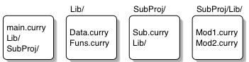
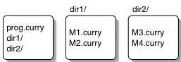

Münster Curry
User's Guide
Release 0.9.11
Wolfgang Lux
Contents
1 Overview
2 Installation
2.1 Binary Distribution
2.2 Source Distribution
2.2.1 Porting to a New Architecture
2.2.2 Building the Documentation
2.2.3 Building universal libraries and programs on Mac OS X
2.3 Installation on Microsoft Windows
2.3.1 CygWin
2.3.2 MinGW
3 Using the Compiler
3.1 Overall Options
3.2 Compiling Curry Modules
3.3 Compiling C Files
3.4 Linking
3.5 Environment
3.6 Examples
3.7 Running Programs
4 Using the Debugger
4.1 Trusted functions
5 Building programs with cymake
5.1 Options
5.2 Environment
5.3 Modules and the Filesystem
5.4 Using Libraries
5.5 Using make
6 Using the Interactive Environment
6.1 Goals
6.2 Commands
6.3 Limitations
6.4 Example Session
7 Libraries
7.1 Prelude
7.2 Haskell 98 Library
7.2.1 Ratio
7.2.2 Complex
7.2.3 Numeric
7.2.4 Ix
7.2.5 Array
7.2.6 List
7.2.7 Maybe
7.2.8 Char
7.2.9 Monad
7.2.10 IO
7.2.11 Directory
7.2.12 System
7.2.13 Time
7.2.14 Locale
7.2.15 CPUTime
7.2.16 Random
7.3 Foreign Function Interface
7.3.1 Foreign
7.3.2 Bits
7.3.3 Int
7.3.4 Word
7.3.5 Ptr
7.3.6 ForeignPtr
7.3.7 StablePtr
7.3.8 Storable
7.3.9 MarshalAlloc
7.3.10 MarshalArray
7.3.11 MarshalError
7.3.12 MarshalUtils
7.3.13 CForeign
7.3.14 CTypes
7.3.15 CString
7.3.16 CError
7.4 Library Modules Compatible with PAKCS
7.4.1 AllSolutions
7.4.2 Combinatorial
7.4.3 Float
7.4.4 Integer
7.4.5 Parser
7.4.6 Ports
7.4.7 Read
7.4.8 Socket
7.4.9 Unsafe
7.5 Library Modules Specific to the Münster Curry Compiler
7.5.1 FiniteMap
7.5.2 IOExts
7.5.3 IOVector
7.5.4 Lexing
7.5.5 NameSupply
7.5.6 Set
7.5.7 Success
7.5.8 Trace
8 Extensions and Limitations
8.1 Extensions
8.1.1 Polymorphic Integer Literals and Negation
8.1.2 Disequality Constraints
8.1.3 Existentially Quantified Types
8.1.4 Partial Applications in Equality and Disequality Constraints
8.1.5 Fixity Declarations
8.1.6 Lazy Patterns
8.1.7 Type Renamings
8.1.8 Expression Type Signatures
8.1.9 Constraint Guards in Case Expressions
8.1.10 Constructor Operators
8.1.11 No Automatic Eta-expansion of Function Definitions
8.1.12 Generalized Function Left-Hand Sides
8.1.13 Polymorphic Generalization of Let-Bound Variables
8.1.14 Mutually Recursive Variable Bindings
8.1.15 Extended Import/Export Specifications
8.1.16 Foreign Function Interface
8.2 Limitiations and Incompatibilities
8.3 Known Bugs
9 Common Problems and Solutions
10 Release History
1 Overview
The Münster Curry compiler is a mature native code compiler for the declarative multi-paradigm language Curry [Han06]. The language supported by the compiler is compatible with version 0.8.2 of the Curry report except for some minor differences with respect to the module system. Many syntax extensions including newtype declarations, infix data constructors, lazy patterns, and recursive pattern bindings are available for compatibility with Haskell [Pey03].1 Other supported extensions include existentially quantified data types, disequality constraints, and I/O exceptions. A distinctive feature of the Münster Curry compiler is the integration of a declarative debugger of wrong answers [CL02]. An interactive Curry environment and a make-like build tool for Curry programs are also part of the distribution. A graphical user interface is available separately for Mac OS X.
The Münster Curry compiler is portable to many Unix operating systems with precompiled binaries being available for Linux (i386), Mac OS X, and eventually other Unix variants. It is possible to build and use the Münster Curry compiler on Windows systems using the CygWin environment. The only additional software needed for compiling and running Curry programs is the Gnu C compiler. Building and installing the Münster Curry compiler from its sources requires a Haskell 98 compiler, too. Building and installing the compiler from source and binary distributions can be achieved with the commands
./configure
make install
in most cases.
Source and binary distributions as well as further information can be found at
http://danae.uni-muenster.de/~lux/curry.
2 Installation
2.1 Binary Distribution
Precompiled binary distributions are available for Linux (i386), Mac OS X, and eventually other systems. After unpacking the archive, change into the directory corresponding to your platform and run the configure script in that directory. You can then use the scripts2 cyc, cymake, and cyi from the bin directory (e.g., by setting up soft links from a directory which is included in $PATH) or install the compiler with make install. It is possible to uninstall the compiler with the command make uninstall. By default, the compiler binaries are installed in the directory /usr/local/bin, interface files, header files, and libraries in /usr/local/lib/curry-0.9.11, and manual pages in /usr/local/man/man1.
The configure script is a standard Gnu configure script that understands the following options:
- --prefix=prefix
- Use prefix instead of /usr/local as base directory for the installation. For instance, in order to install the compiler in the directories bin and lib/curry-0.9.11 in your home directory, you can use the command configure --prefix=$HOME.
- --bindir=bindir
- Install the compiler binaries in directory bindir instead of /usr/local/bin.
- --libdir=libdir
- Install the library files in directory libdir/curry-0.9.11 instead of /usr/local/lib/curry-0.9.11.
- --mandir=mandir
- Install the manual pages in directory mandir/man1 instead of /usr/local/man/man1.
2.2 Source Distribution
The Münster Curry compiler is known to work under Linux (Intel i386, AMD x86-64, Power PC), NetBSD i386, FreeBSD, Solaris for Sparc, Mac OS X, and will probably run out of the box on most other Unix operating systems as well.
In order to rebuild the Münster Curry compiler from its sources, you need a Haskell 98 compiler and a modern make. It is recommended to use ghc for compiling Haskell sources, but hbc and nhc98 are supported as well. The makefiles are known to work with Gnu make, BSD make, and Solaris' make command. They may work with other make commands, too.
Compilation from the unpacked source directory is achieved with the commands
./configure
make
After successful compilation, you can use the scripts3 cyc, cymake, and cyi from the build directory (e.g., by setting up soft links from a directory which is included in $PATH) or install the compiler with the command make install. An installed compiler can be uninstalled with the command make uninstall.
The configure script automatically determines the required software. In particular, it will check for one of the supported Haskell compilers in the path, trying ghc, hbc, and nhc98 in that order. It is also possible to select a particular compiler with the --with-hc option.
The configure script understands the following options.
- --prefix=prefix
- Use prefix instead of /usr/local as base directory for the installation. For instance, in order to install the compiler in the directories bin and lib/curry-0.9.11 in your home directory, you can use the command configure --prefix=$HOME.
- --bindir=bindir
- Install the compiler binaries in directory bindir instead of /usr/local/bin.
- --libdir=libdir
- Install the library files in directory libdir/curry-0.9.11 instead of /usr/local/lib/curry-0.9.11.
- --mandir=mandir
- Install the manual pages in directory mandir/man1 instead of /usr/local/man/man1.
- --with-hc=hc
- Use the command hc for compiling Haskell sources. E.g., if you have ghc and hbc installed on your machine and prefer building the compiler with hbc, you can use configure --with-hc=hbc. configure will check that the compiler hc is a supported Haskell 98 compiler.
- --disable-ghc-make
- With this option, you can specify that ghc's --make option should not be used and Haskell source files are compiled individually. The advantage of this configuration is that it allows you to specify options for particular source files on the make command line. E.g., if you want to build a compiler for profiling and get profiling data for all top-level functions in file TypeCheck.lhs, you can use the command
make HCFLAGS='-prof -auto' TypeCheck_HCFLAGS=-auto-all
This option has no effect when hbc or nhc98 are used.
- --disable-stdlib
- This option disables compilation of all library modules except for the prelude.
- --disable-debug
- This option disables compilation of the Curry libraries with debugging information. Note that the compiler still can be used for compiling modules with debugging information, but you will be unable to build programs from these modules due to missing definitions for the standard library. This option is useful in order to speed up compilation on a slow machine if you do not intend to use the debugger.
- --disable-occurs-check
- The semantics of Curry requires performing an occurs check in equality and disequality constraints in order to avoid constructing cyclic data terms. With this option, the occurs check can be disabled. This can improve performance on some examples, but may lead to worse performance and non-termination on others. Using this option is not recommended.
- --enable-stability
- This flag enables some experimental code that suspends threads performing a non-deterministic instantiation of variables while other deterministic computations can be run. This strategy is known as stability from AKL and Oz. For instance, given the definitions
data Nat = Z | S Nat
nat Z = success
nat (S n) = nat n
the expression let n free in nat n & n =:= S Z is evaluated deterministically because the deterministic binding of n in the equality constraint will get precedence over the non-deterministic instantiation of n in nat.
- --enable-copying
- By default, the bindings of local variables in different solutions of a search goal are managed with an extended trailing scheme. This option enables an alternative implementation, where independent copies of the search goal are used for each branch of the goal's search tree. This allows for a slightly more efficient execution of deterministic code, but can slow down non-deterministic code considerably in some situations. See [Lux04] for a comparison of both configurations.
- --enable-trampoline
- By default, the compiler uses some extensions of the Gnu C compiler in order to implement tail calls efficiently by inserting assembler jump instructions into the code. This trick works on many architectures, but is not fully portable. For instance, it does not work under Mac OS X and is also incompatible with building code for shared libraries on most systems.
If the compiler is configured with --enable-trampoline, it uses a portable but slower implementation where a global loop (the so-called trampoline) is used for dispatching tail calls. If your Curry programs keep crashing with bus errors or segmentation faults try reconfiguring the compiler with this option. Note that --enable-trampoline is the default when using a C compiler other than Gnu C and also on Mac OS X.
- --disable-pointer-tags
- Normally, the runtime system encodes character values and integer values that fit into n-1 bits, where n is the number of bits in a machine word, in pointers rather than allocating a node in the heap for them. This improves efficiency mostly due to avoiding allocation, but makes pattern matching and character and integer operations slightly more complex. When the system is configured with --disable-pointer-tags, all characters and integer numbers are allocated in the heap. This option is useful only for measuring the performance gain of the default configuration and is not recommended otherwise.
- --disable-mprotect
- In order to detect errors in the two-space copying garbage collector early, the runtime system makes the inactive semi-space of the heap inaccessible using the mprotect(2) system call. This requires that mprotect is able to protect individual memory pages, which should be the case on most operating systems. The configure script checks only for the availability of the mprotect call, but does not check whether it actually works. On systems where mprotect exists, but is not able to protect individual pages, its use can be disabled by passing the --disable-mprotect option to configure.
- --enable-cam2c
- The source distribution includes a compiler from abstract machine code to C. This compiler is built by default only when the --enable-cam2c option is passed to configure. Note that this compiler is mainly intended for testing the C code generator of the Curry compiler and is not other integrated with the compiler.
- --enable-mach
- The source distribution also includes an interpreter for the abstract machine underlying the implementation of the Münster Curry compiler. This interpreter is built when the --enable-mach option is passed to configure. Note that the interpreter is poorly maintained and may be removed in a future release.
2.2.1 Porting to a New Architecture
The Münster Curry compiler was designed to be as portable as possible and should work on systems where an ANSI C compiler and a POSIX compatible environment are available. It has been tested on different 32-bit and 64-bit architectures, and should work on all 32-bit and 64-bit systems where the size of a C long is equal to that of a pointer.
In order to generate efficient code, the Münster Curry compiler uses some Gnu C extensions which work on a lot of architectures, but are not strictly portable. In particular, the default code generation model is incompatible with position independent code on most architectures. On systems where position independent code is the default - e.g., Apple's Mac OS X and IBM's AIX - and eventually on other systems, the compiler may have to be configured with the --enable-trampoline option in order to produce working executables.4
In order to test the compiler on an unsupported architecture, you can use the test suites in http://danae.uni-muenster.de/~lux/curry/examples.tar.gz and http://danae.uni-muenster.de/~lux/curry/more-examples.tar.gz. After unpacking the archives, execute make test CYC=path-to-cyc for both of them. This should report All tests completed successfully at the end. In that case, you can ignore the error messages produced while running the tests. Otherwise, send a bug report to wlux@uni-muenster.de.
2.2.2 Building the Documentation
The internal documentation of the Münster Curry compiler, which describes the compiler and runtime system implementation, can be built from the build directory by invoking either make curry.dvi or make curry.pdf depending on the format you prefer. These targets require a working LATEX installation (which must include pdflatex in order to build curry.pdf) and in addition noweb.sty from Norman Ramsey's noweb literate programming tool5.
The source distribution includes pre-built TEX sources for the runtime system, which were created with noweb version 2.10c. These files may cause errors when used together with a noweb.sty from an earlier noweb release. In that case you have two options. Either upgrade noweb from a CTAN mirror or remove all .tex files except for runtime.tex from the runtime directory in the source tree. This is achieved best by changing into the runtime directory in your build(!) directory and invoking make maintainerclean there. Note that this will also remove the .h and .c files in the runtime directory and cause them to be rebuilt with your local noweb installation when the runtime system is built with make the next time.
On Mac OS X, if you have TeXShop6 installed, you can use it in order to typeset the documentation by using make TeXShop instead of make curry.pdf. However, in contrast to the standard targets, the TeXShop target does not yet take care of invoking bibtex when necessary or typesetting the document once again if the cross references were updated.
2.2.3 Building universal libraries and programs on Mac OS X
It is easily possible to build the Münster Curry compiler with universal libraries that can be used on both Intel and PowerPC based Macintosh computers by passing appropriate -arch options to the C compiler either during configuration or while building the compiler. For instance, the command
./configure CFLAGS='-arch i386 -arch x86_64 -arch ppc -g -O2'
will configure the Münster Curry compiler such that it can be used to link native executables on Intel based machines in 32-bit and 64-bit modes as well as on 32-bit PowerPC machines. It is also possible to build universal programs by specifying the appropriate -arch options during the link step (see Sect. 3.1).
2.3 Installation on Microsoft Windows
The Münster Curry compiler can be built on Windows systems with CygWin as well as with MinGW.
In order to build the Münster Curry compiler with CygWin, the development packages (make, gcc) and a working Haskell compiler are required. Currently, this appears to work only for the native Win32 binaries of ghc. The installation instructions below are derived from notes kindly provided by Diego Berrueta.
Note: In the following, <CYGWIN> represents the directory where CygWin is installed.
- Install the Win32 version of ghc in <CYGWIN>/usr/local/ghc.
- Add /usr/local/ghc/bin to the path. Make sure that the executable is found by typing ghc -v in the CygWin console. This should print out a long list configuration and package information for ghc.
- Unpack the sources of the Münster Curry compiler in some convenient place and change into the curry-0.9.11 directory.
- Configure, compile, and install the compiler:
./configure
make
make install
- Ready to test. Make sure that /usr/local/bin is in your PATH.
In order to build the Münster Curry compiler with MinGW, a minimal development environment (gcc-core, binutils, mingw-runtime, and win32-api) is needed. In addition, the MSYS shell must be installed and a working Haskell compiler is required. The compiler can be built with the usual commands
./configure
make
make install
The last step may be omitted and the compiler can be used from its build directory, too. Note that at present, the networking related functions from modules IOExts and Socket do not work with MinGW.
3 Using the Compiler
The Curry compiler is invoked with the command cyc. Normally, it performs compilation, assembly, and linking. The "overall options" allow stopping this process at an intermediate stage. For example, the -c option says not to run the linker. The output then consists of object files output by the assembler.
Other options control one stage of processing; for instance, the --debug option tells cyc to compile Curry modules such that they can be evaluated by the declarative debugger (see Sect. 4).
The cyc program accepts options and file names as operands. Options and file names can be mixed on the command line. In general, the order of options is not relevant with the exception of additional libraries specified with -l options. On many systems, these should be specified last on the command line in order to ensure proper linking of programs.
The order of file names does matter as it determines the order in which the files are compiled. In particular, it is essential to specify Curry source modules such that each module is compiled before any module that depends on it. cyc compiles and links exactly those files which are named on the command line and does not include imported modules automatically. In general, you should use cymake (see Sect. 5) in order to build programs composed of more than one source module.
The source language of a file and the associated processing is determined by the file name extension. Argument names which end with .curry are taken to be Curry source, names ending in .lcurry are taken to be literate Curry source, names ending in .c are taken to be C code, names ending in .s are taken to be assembler programs, and .o are object files.
By default, a program linked with cyc executes the main function in the main module of the program. The compiler assumes that the last Curry source file appearing on the command line defines the main module. A different main module can be specified explicitly with the -M option. It is possible to specify a different goal with the -e option. See Sect. 6.1 for a description of the syntax of goals. If the type of the goal is IO t, for some arbitrary type t, the program executes the corresponding I/O action. Otherwise, the goal is evaluated and its solutions are presented incrementally on the standard output.
3.1 Overall Options
The following options control the general processing of source files.
- -n
- Do not execute any command, but display each command that normally would be executed.
- -q
- This option has no effect.
- -v
- Display each command before it is executed by cyc.
- -C
- Stop processing after generating C code from the Curry source modules.
- -S
- Stop processing after generating assembler code from the Curry and C source files.
- -c
- Compile and assemble the source file but do not link.
- -o file
- Place the output in a file named file. Since only one output file can be specified, it does not make sense to use -o when compiling more than one input file unless you are producing an executable file as output.
If -o is not specified, the default is to put an executable file in a.out, the object file for source.suffix in source.o, its assembler file in source.s, and its C file in source.c.
- -arch arch
- Mac OS X: Compile for the specified target architecture arch. Multiple options work, and direct the compiler to produce "universal" binaries. Using this option on other systems is likely to produce a C compiler error.
3.2 Compiling Curry Modules
The names of Curry source files must end with .curry or .lcurry. The latter are taken to contain literate Curry source and are deliterated first. All Curry source files are compiled into C code. In addition, for every source file file.curry and file.lcurry, respectively, the compiler creates a file file.icurry containing the module's interface. The compiler uses module interfaces when processing import declarations in a source module. In order for the compiler to find the interfaces of imported modules, the name of the source file should agree with its module name. Hierarchical module names of the form A.B.C are mapped onto the filesystem as in Java, i.e., the compiler expects to find the interface of this module in file C.icurry in directory A/B relative to the directory where the compiler was invoked or to one of the directories specifying the import search path (see also Sect. 5.3).
The following options control the compilation of Curry source into C code.
- -g
- Deprecated synonym for --debug.
- --debug
- Prepare the compiled code for executing the program with the declarative debugger.
Note that code compiled with this option is incompatible with code compiled without this option. This option must therefore be used consistently for compiling and linking all modules of a program.
- --trusted
- This flag has an effect only in conjunction with one of previous options. It tells that debugger that it can trust all functions from a module compiled with this flag. The debugger will not ask questions about such functions.
- -idir
- Add directory dir to the list of paths used to locate interface files. By default, the compiler searches for interface files in the current directory and in its standard library directory (usually /usr/local/lib/curry-0.9.11).
The directory dir is also added to the list of paths used to locate header files, as if -Idir was present on the command line.
- -Pdir
- Add directory dir to the list of paths used to locate interface files. By default, the compiler searches for interface files in the current directory and in its standard library directory (usually /usr/local/lib/curry-0.9.11) .
The directory dir is also added to the lists of paths used to locate header and library
files, respectively, as if -Idir and -Ldir were present on the command line.
- -Whaskell
- -Wprolog
-
- -Wgoedel
- Warn whenever a definition does not obey the selected case mode (cf. Sect. C.1 of the Curry report [Han06]).
- -Wall
- Enable all warnings below.
- -Wunused
- Enable all unused warnings below.
- -Wunused-data
- Warn whenever a data constructor is not used.
- -Wunused-decl
- Warn whenever a function or pattern declaration is not used.
- -Wunused-var
- Warn whenever a function or pattern argument is not used.
- -Wshadow
- Warn whenever a local declaration shadows a declaration from an outer scope.
- -Woverlap
- Warn whenever a function's equations have overlapping left hand sides.
- -Hsize
- Change the heap size used by the compiler to size. It is possible to use the abbreviations sizek and sizeM to specify the heap size in kBytes and MBytes, respectively.
Note that this option does not effect the heap size of the compiled executable. Use -hsize for this (see Sect. 3.4).
3.3 Compiling C Files
The following list describes only the most common options understood by cyc when compiling C source either directly or as a result of previously compiling Curry source into C code. In fact, cyc passes on most of its options to the C compiler. For a detailed description of these options see the Gnu C man pages and documentation.
- -Dname
- Predefine name as a macro, with definition 1.
- -Dname=defn
- Predefine name as a macro with definition defn.
- -Uname
- Cancel any previous definition of name, either built in or provided with a -D definition.
- -Idir
- Add directory dir to the list of paths used to locate header files. The standard library directory (usually /usr/local/lib/curry-0.9.11) is always included in this list.
- -Fdir
- Mac OS X: Add the framework directory dir to the list of paths used to locate header files. Using this option on other systems is likely to produce a C compiler error.
- -O
- equivalent to -O1
- -Olevel
- Controls optimization of the compiled code. -O0 disables all optimizations. Note that -O3 and higher levels will fail to produce valid code for Curry modules on many architectures.
- --ccopt opt
- Passes the option opt to the C compiler without interpretation. For instance, in order to include debugging symbols in the compiled C code, invoke the compiler with --ccopt -g.
- --ccopts opts
- Passes each option from the comma separated list opts to the C compiler without further interpretation.
3.4 Linking
The following options are relevant while linking a program. The compiler creates a tiny C code file in this phase, which contains the startup code initializing the Curry runtime system and starting the evaluation of the goal. This file is compiled like other C code during the link phase.
- -g
- Deprecated synonym for --debug.
- --debug
- Compile a program that invokes the declarative debugger. All Curry modules must have been compiled with the --debug option as well.
- -hsize
- Use size bytes for the heap of the Curry program. Note that actually twice as much memory is allocated for the heap because the runtime system uses a two-space copying collector. The abbreviations sizek and sizeM can be used for specifying the size in kBytes and MBytes, respectively. The default is to use a 4 MByte heap.
- -ksize
- Use size bytes for the stack of the Curry program. The abbreviations sizek and sizeM can be used for specifying the size in kBytes and MBytes, respectively. The default is to use a 512 kByte stack.
- -tsize
- Use size bytes for the trail stack of the Curry program. The abbreviations sizek and sizeM can be used for specifying the size in kBytes and MBytes, respectively. The default is to use a 512 kByte trail stack.
- -f
- Print all failures during execution of a non-deterministic goal. If given multiple times, print also failures inside encapsulated search.
- -p
- Print cumulated execution times and memory usage statistics at the end of the run. If specified more than once, also print memory statistics at each garbage collection.
- -egoal
- Evaluate goal instead of main. See Sect. 6.1 for a description of the goal syntax. The goal is evaluated with respect to the modules specified with -M options and the Curry source files appearing on the command line. All
entities exported from the Prelude and the Curry source file that appears last on the command line or the last module specified with a -M option, if there are no source file arguments, are in scope with unqualified and qualified names. The exported entities of all other
modules are in scope with qualified names only.
- -Tgoal
- Compute the type of goal. See Sect. 6.1 for a description of the goal syntax. The goal's type is computed with respect to the modules specified with -M options and the Curry source files appearing on the command line. All
entities exported from the Prelude and the Curry source file that appears last on the command line or the last module specified with a -M option, if there are no source file arguments, are in scope with unqualified and qualified names. The exported entities of all other
modules are in scope with qualified names only.
- -Mmodule
- Brings all entities exported from module into scope with their qualified names for a goal specified with the -e and -T options. By default, only the entities exported from the Prelude and the Curry source files occurring on the command line are in scope. The entities exported from the Prelude and the last source file appearing on the command line or specified with the last -M option, if there are no source file arguments, are brought into scope with their unqualified names, too.
Module is either the name of a source file (ending in .lcurry or .curry), the name of an interface file (ending in .icurry), or the name of a module whose interface can be located in the interface search path.
- -Ldir
- Add directory dir to the list of paths used to locate libraries specified with -l options. The standard library directory (in the standard configuration: /usr/local/lib/curry-0.9.11) is always included in this list.
- -llib
- Search the library named lib when linking.
- -framework name
- Mac OS X: Link against framework name. Using this option on other systems is likely to produce a C compiler error.
- --ldopt opt
- Passes the option opt to the C compiler without interpretation. In contrast to --ccopt (see Sect. 3.3), opt is used only during the link phase.
- --ldopts opts
- Passes each option from the comma separated list opts to the C compiler without further interpretation. As with --ldopt, opts are used only during the link phase.
3.5 Environment
- CURRY_PATH
- The environment variable CURRY_PATH is used to locate the compiler executables. The default value is /usr/local/lib/curry-0.9.11.
- CURRY_IMPORT_PATH
- CURRY_INCLUDE_PATH
-
- CURRY_LIBRARY_PATH
-
The environment variables CURRY_IMPORT_PATH, CURRY_INCLUDE_PATH, and CURRY_LIBRARY_PATH contain colon-separated lists of directories that are searched for imported interfaces, included header files, and library files, respectively. Their default value is $CURRY_PATH.
3.6 Examples
cyc test.curry
This command compiles and links the Curry module in test.curry. The executable is put in a.out and evaluates the main function in test.curry.
cyc -h12M -O2 A.lcurry B.lcurry -o B
This command compiles and links the Curry modules in A.lcurry and B.lcurry in that order. Both files are assumed to contain literate Curry source. The code is optimized by the C compiler using optimization level 2. The executable is put in file B. It evaluates the main function in B.lcurry and uses a larger default heap (12 MBytes).
cyc -c nat.curry
cyc -e "add n Z =:= S Z where n free" nat.o -Mnat -o one
The first of these commands compiles the Curry module in nat.curry and places the object file in nat.o. The second command then links the object file into a program which evaluates the goal add n Z =:= S Z where n free in the context of this module. Note that this context must be specified explicitly with a -M option because no Curry module was named on the second command line. The executable is placed in one.
cyc -e "length Xs where Xs free"
This command compiles and links a program that evaluates the goal length Xs where Xs free. The executable is placed in a.out.
3.7 Running Programs
The operation of a Curry program depends on the type of the goal being evaluated. If it is of type IO t, the I/O action described by the goal is executed. All command line arguments except for the runtime system options (see below) are available to the program and can be accessed with the function System.getArgs.
If the goal's type is not IO t, the program computes and prints the solutions of the goal with a depth first search strategy. A solution comprises the normal form of the goal and the bindings and constraints for its free variables. When run on an interactive terminal, solutions are presented one by one giving the user a chance to stop the computation after each solution. Otherwise, all solutions of the goal are computed.
This behavior can be changed by passing one of the options -i and -n to the program. If invoked with -i, the program computes the solutions incrementally as if it were run on an interactive terminal. If invoked with -n, the goal's solutions are computed all at once.
All Curry programs run with fixed size heap, stack, and trail. Their sizes can be specified at link time (see Sect. 3.4), but can be changed at run-time by passing options to the Curry runtime system. Such options must be enclosed with +RTS and -RTS arguments on the command line. The -RTS switch may be omitted if it is the last argument on the command line.
The Curry runtime system understands the following options:
- -b mode
- Use buffer mode mode for the standard input and output of the program where the following modes are recognized
| n | Unbuffered |
| l | Line buffered |
| f[n] | Fully buffered |
The optional number n allows specifying the buffer size when using fully buffered mode.
- -h n
- Use n bytes for the heap in this run of the program. Note that actually twice as much memory is allocated for the heap because the runtime system uses a two-space copying collector. The abbreviations nk and nM can be used for specifying the size in kBytes and MBytes, respectively.
- -k n
- Use n bytes for the stack in this run of the program. The abbreviations nk and nM can be used for specifying the size in kBytes and MBytes, respectively.
- -t n
- Use n bytes for the trail stack in this run of the program. The abbreviations nk and nM can be used for specifying the size in kBytes and MBytes, respectively.
- -f
- Print all failures during execution of a non-deterministic goal. If given multiple times, print also failures inside encapsulated search.
- -p
- Print cumulated execution times and memory usage statistics at the end of the run. If specified more than once, also print memory statistics at each garbage collection.
- -d
- Turn on the low-level tracer of the abstract machine. In general you do not want to see its output, but it may give hints to why a program does not compute an expected solution or runs into a deadlock. Beware that tracing can slow down program execution considerably and the output may be excessively large.
Example
prog -x +RTS -k512k -h8M -t0 -RTS foo
executes prog with an 8 MByte heap, a 512 kByte stack, and no trail stack. The arguments -x and foo are passed to the Curry program and are available from Curry code via System.getArgs. Note that running a program without a trail stack, as in this example, requires that the code is completely deterministic and does not use encapsulated search.
4 Using the Debugger
The Münster Curry compiler includes a declarative debugger of wrong answers. This debugger can be used for finding the source of a wrong answer in the program. The idea of a declarative debugger is to compute a representation of the program's computation, the so-called computation tree. In the Curry debugger, each node of the computation tree corresponds to a basic fact f t1 ... tn = t where f is the name of a function and t and all ti are data terms. Data terms can include the special value ^ denoting an unevaluated expression. The value ^ is represented by an underscore (_) in the output of the debugger.
The debugger will ask questions about the correctness of these basic facts in order to find (an instance of) a program rule which computes a value that does not match the intended semantics of the program.
In order to debug a program, all of its modules have to be recompiled with the --debug command line flag.
The debugger is capable of handling programs which use encapsulated search. Note that wrong answers whose cause is actually a missing answer in a search goal cannot be detected. The debugger cannot yet handle programs involving I/O.
4.1 Trusted functions
When debugging larger programs, it is very inconvenient to answer questions about lot of functions which are supposed to be correct. In order to narrow down the region of the program that is explored in the debugger, the compiler allows annotating whole modules as well as individual functions as trusted. The debugger assumes that basic facts for trusted function are always correct and will not ask any questions for them. Note that the prelude and the standard libraries are always trusted.
A whole module can be trusted by invoking with the compiler with the --trusted option in addition to --debug. Individual functions can be trusted by means of trust annotations in the source code.
Lexically, trust annotations appear as nested comments using {-# and #-} as delimiters7. Syntactically, trust annotations are declarations that can appear where a function declaration is allowed. To this end, the Curry grammar is extended as follows (cf. appendix C.3 in [Han06]).
| |
|
|
Signature | TrustAnnot | Equat |
| |
| |
|
| {-# (TRUST | SUSPECT) (FunctionNames | _) #-} |
| |
An explicit trust annotation {-# TRUST f1, ..., fn #-} declares f1,...,fn as trusted functions. The annotation {-# TRUST _ #-} declares all functions in its declaration group, which are not listed in an explicit trust annotation, as trusted functions. Local functions are trusted automatically when their enclosing function is trusted. Thus, adding an annotation {-# TRUST _ #-} at the top-level of a module is equivalent to compiling the module with --trusted.
{-# SUSPECT ... #-} annotations have the opposite effect as TRUST annotations, i.e., they declare functions as untrusted. This is useful in order to narrow down the set of functions where a bug is suspected when a module is compiled with --trusted. In some sense, adding a SUSPECT annotation to an otherwise trusted module is the equivalent of setting a breakpoint in a conventional debugger for an imperative language.
5 Building programs with cymake
cymake is a make like tool for compiling Curry programs. Dependencies are automatically extracted from the source files; there is no need to construct or maintain a Makefile.
cymake accepts options and file names on the command line in an arbitrary order. The file arguments determine what to compile. If file is the name of an executable (i.e. it has no extension), file.lcurry or file.curry is assumed to contain the main module of the program. All modules it depends on are compiled (if necessary) and linked to an executable. If file is the name of a source module (i.e. it ends in .lcurry or .curry) or an object module (i.e. it ends in .o) then the object file for that module is generated. Archive files and shared libraries (i.e. files ending with .a, .so, .dylib, or .dll) are not targets, but passed as additional arguments to the linker.
cymake allows several programs to reside in the same directory. Modules can be shared between several programs. Directories to search for modules can be specified with the -i flag, in the same way as for cyc. In addition, directories which are searched for interfaces of library modules can be specified with the -P flag.
cymake correctly handles the fact that the Curry compiler generates two files, an object file and an interface file, for each module compiled.
5.1 Options
cymake understands the following options:
- -n
- No execution mode. Print commands but do not execute them.
- -q
- Quiet mode. Do not print commands before executing them.
- -M
- Output a Makefile compatible dependency list on the standard output.
- --find
- For each command line target t, cymake will print a line of the form t: f, where f is the name of the source or interface file corresponding to t. If t is a module name, cymake will look for the source or interface file first in the current directory and then along the search path. If no file is found, f is empty.
- -a
- Always link the executable, even if it is not out of date with respect to its object files. This is useful if only the goal to be evaluated by the program is changed.
- -e goal
- Evaluate goal instead of function main. This option cannot be used when compiling more than one module. See Sect. 6.1 for a description of the syntax of goals.
- -Tgoal
- Compute the type of goal. This option cannot be used when compiling more than one module. See Sect. 6.1 for a description of the goal syntax.
- --debug
- Compile the program for use with the debugger. As object files compiled with --debug cannot be linked with object files compiled without --debug, cymake uses the suffix .d.o instead of .o for object files when this option is specified.
- -idir
- Add directory dir to the list of paths used to locate imported modules. By default, the compiler searches only the current directory for source files. Note that the current directory is always searched first.
The directory dir is also added to the list of paths used to locate C header files, as
if -Idir was present on the command line.
- -Pdir
- Add directory dir to the list of paths used to locate interface files for library modules. By default, the compiler searches for interface files in its standard library directory (usually /usr/local/lib/curry-0.9.11).
The directory dir is also added to the lists of paths used to locate C header files and
libraries, respectively, as if -Idir and -Ldir were present on the command line.
The compiler scans the directories specified with -P before the installation directory; thus, it is possible to hide the interfaces of the standard library by using this option.
- -o file
- Puts the executable file in file. This option cannot be used when compiling more than one module. This option is ignored if compiling to an object file.
- --clean
- Remove all compiled files for a program. If specified in conjunction with --debug only the object files for the debugger, i.e. with suffix .d.o, are removed.
Most other flags are assumed to be compiler options and are passed to cyc when compiling and linking modules.
5.2 Environment
- CURRY_PATH
- The environment variable CURRY_PATH is used to locate the auxiliary executables used by cymake. The default value is /usr/local/lib/curry-0.9.11.
- CURRY_IMPORT_PATH
- CURRY_INCLUDE_PATH
-
- CURRY_LIBRARY_PATH
- The environment variables CURRY_IMPORT_PATH, CURRY_INCLUDE_PATH, and CURRY_LIBRARY_PATH contain colon-separated lists of directories that are searched for imported interfaces, included header files, and library files, respectively. Their default value is $CURRY_PATH.
5.3 Modules and the Filesystem
Starting with release 0.9.6, the Münster Curry compiler maps hierarchical module names onto the filesystem as in Java. This is of particular importance in conjunction with cymake which tries to find sources for imported modules. For instance, the source for an imported module Lib.Data.Set is expected in one of the files Lib/Data/Set.lcurry and Lib/Data/Set.curry. This path is relative to the directory where cymake is invoked or one of the directories specified with the -i option and does not depend on the path of the source file or target being compiled. This makes it possible to import modules of one subproject into sources of another subproject. The compiler uses the same procedure for locating interface files of imported modules. Therefore, you should always compile the sources of hierarchical modules from the base directory of the project.
For instance, given the following directory layout

and the following association between files and modules
| File | Module | File | Module |
| main.curry | main | SubProj/Sub.curry | Sub |
| Lib/Data.curry | Lib.Data | SubProj/Lib/Mod1.curry | Sub.Mod1 |
| Lib/Funs.curry | Lib.Funs | SubProj/Lib/Mod2.curry | Sub.Mod2
|
it is possible to rebuild the program and all of its imported modules using the single command cymake -iSub main.
5.4 Using Libraries
The -i and -P options of cymake allow searching for imported Curry modules and library interfaces in various directories besides the current directory and the standard library directory. Imported source files, which are found in the current directory and along the paths specified with -i options, are updated as necessary and the compiled object files are automatically included when linking the executable program.
Interfaces found along the paths specified with -P options are used for determining whether a source module is out of date, but they cause no object files to be linked to the program. As cymake does not provide means to specify additional object files to be linked with a program, the object files corresponding to these interfaces must be placed in a library, which must be specified when invoking cymake.
As an example, consider the following directory hierarchy

where the files in directory modules are part of the program and the files in directory library constitute an independent library.
Assuming that the files L1.curry and L2.curry define the modules L1 and L2, respectively, it is possible to bring the library up to date with the command
(cd library; cymake L[12].curry; ar rc libL12.a L[12].o; ranlib libL12.a)
In order to bring the program prog up to date when the files M1.curry and M2.curry define the modules M1 and M2, respectively, the following command can be used:
cymake -imodules -Plibrary prog -lL12
Note that this command will not recompile the files L1.curry and L2.curry if they are newer than the corresponding object files in directory library. Nevertheless, the interface files L1.icurry and L2.icurry can cause a recompilation of prog.curry, M1.curry, and M2.curry, respectively, if these modules are out of date with respect to the interfaces.
5.5 Using make
When cymake is invoked with the -M option, it generates make style dependencies which can be included in a Makefile. The generated dependencies assume that the Makefile contains definitions similar to
.SUFFIXES=.curry .lcurry .icurry .o
.curry.o:
cyc -c $< -o $@
.lcurry.o:
cyc -c $< -o $@
.o.icurry:
@test -f "$@" || \
(echo "$@ does not exist"; \
echo "Remove $< and run make again"; exit 1)
in order to compile Curry modules. The .o.icurry rule is essential for a correct operation of make with respect to the generated dependencies.
6 Using the Interactive Environment
cyi is an interactive environment that allows evaluating and debugging Curry goals with respect to a Curry module loaded into the interpreter. At startup, cyi reads and interprets commands from the file .cyirc in the current directory if it exists, or from .cyirc in your home directory otherwise, and then loads either the first module specified on the command line or the Curry prelude.
A goal is a Curry expression optionally followed by a where-clause, which can be used for providing local definitions for the goal (see appendix C.3 in [Han06] for the context free syntax of Curry).
All entities exported from the Prelude and the module specified in the last :load
command are in scope with unqualified and qualified names unless they are shadowed by one of the declarations from the where-clause. Entities from modules that are imported directly or indirectly from the module specified in the last :load command are also in scope, but only with qualified names.
All free variables of the goal must be declared either in the where-clause or by using a let expression as goal. The bindings of the free variables are displayed together with the normal form of the goal after successful evaluation unless the goal is of type IO t.
6.2 Commands
At the prompt of the interactive environment, the following commands can be entered:
- goal
- Evaluate goal in the context of the current module.
- :^[goal]
- Evaluate goal in the context of the current module. If goal is omitted, the previous goal is evaluated again.
- :debug [goal]
- Invoke the debugger for goal. It may take some time to recompile the source modules with debugging information. If goal is omitted, the debugger is invoked for the previous goal.
- :type [goal]
- Print the type of goal instead of evaluating it. If goal is omitted, the type of the previous goal is shown.
- :load module
- Set the current evaluation context to module. This command will compile module and all modules it depends on if necessary. Module can be specified either by the name of its source file (ending in .lcurry or .curry) or a plain module name. In the latter case, cyi will look for a source or interface file for module in the current directory and the current search path as determined by the -i and -P options set with the :set command and the environment variable CURRY_IMPORT_PATH.
cyi displays the name of the current module in its prompt.
- :load
- Reset the current evaluation context to the Curry prelude.
- :reload
- Repeat the last load command.
- :freshen
- Recompile the current module and all imported source files.
- :clean
- Remove all compiled files for the current module and all imported source files.
- :interface module
- Display the interface of module. If the environment variable PAGER is set, the interface file is displayed with this command. Otherwise the interface is simply written to the standard output.
- :interface
- Display the interface of the current module.
- :edit file
- Invoke the editor for file. The default editor is /usr/bin/vi, but this can be changed by setting one of the environment variables VISUAL and EDITOR to your preferred editor before starting cyi.
- :edit
- Edit the source file of the current module.
- :set option ...
- Add options to the list of compiler options.
- :unset word ...
- Remove words from the list of compiler options.
- :cd dir
- Change the current directory to dir.
- :cd
- Print the current directory.
- :!command
- Execute the shell command command.
- :version
- Display the compiler's version.
- :help
- Show the list of supported commands.
- :quit
- Quit cyi.
All commands, except for :cd and :clean, may be abbreviated to their first letter.
6.3 Limitations
cyi is implemented as a shell script which invokes cymake and cyc for compiling modules and goals. Commands are read from the standard input using the shell's builtin read command. Some shells, e.g. /bin/sh on Solaris, cannot read raw input but apply backslash processing to the input. When cyi is executed by such a shell, all backslash characters on the command line must be escaped by another backslash character; i.e., you have to enter \\x -> x in a goal instead of \x -> x and ord '\\n' instead of ord '\n'. In order to remind you of this limitation, cyi displays the following warning at startup when it is appropriate.
Warning: Backslashes on the command line must be escaped
For instance, use \\x -> x for a lambda abstraction
and '\\n' for the linefeed character.
On most systems you should not see the above warning and can enter your goals as expected because the configure scripts of the Münster Curry compiler will look for a shell that supports raw reads. If this is not the case, you may want to install a modern shell, e.g., Gnu bash, on your system and reinstall the compiler. Be careful to remove the file config.cache if it exists in your build directory before running configure again.
Command line editing and history require support from the read command of the shell, which executes the cyi script. This is available only for Gnu Bash and Korn shells except for the public domain version. Command line editing also works for the Z shell, but without history.
6.4 Example Session
Figs. 1 and 2 on the following pages show a typescript of an example session with cyi. User input is typeset in a slanted typeface. The file nat.curry contains the following definitions.
data Nat = Z | S Nat
nat Z = success
nat (S n) = nat n
add Z n = Z
add (S m) n = S (add m n)
sub m n | add d n =:= m = d where d free
Note that add deliberately contains an error, which is corrected during the session.
lux@localhost:~ % cyi
_____ __ __
/ ___/ | / _ Muenster Curry Compiler
/ / | / | | Version 0.9.11, Copyright (c) 1998-2007
/ /___ / / | |
\____/ /_/ |_| Type :h for help
Prelude> length [1,2,3,4]
4
Prelude> length Xs where Xs free
{Xs = []} 0
More solutions? [Y(es)/n(o)/a(ll)]
{Xs = [_a]} 1
More solutions? [Y(es)/n(o)/a(ll)]
{Xs = [_a, _b]} 2
More solutions? [Y(es)/n(o)/a(ll)] n
Prelude> :l nat
/usr/local/bin/cyc -c nat.curry -o nat.o
nat> let N free in nat N
{N = Z}
More solutions? [Y(es)/n(o)/a(ll)]
{N = S Z}
More solutions? [Y(es)/n(o)/a(ll)] n
nat> sub (S (S Z)) X where X free
S (S Z)
More solutions? [Y(es)/n(o)/a(ll)] n
Figure 1: Sample session
nat> :d
Preparing nat.curry for debugging; this may take some time...
/usr/local/bin/cyc --debug -c nat.curry -o nat.d.o
Entering debugger...
Considering the following basic fact:
1. nat.sub (S (S Z)) _a -> (S (S Z))
Is this valid? [y(es)/n(o)/a(bort)] n
Considering the following basic fact:
1. nat.add (S (S Z)) _a -> (S (S Z))
Is this valid? [y(es)/n(o)/a(bort)] n
Considering the following basic fact:
1. nat.add (S Z) _a -> (S Z)
Is this valid? [y(es)/n(o)/a(bort)] n
Considering the following basic fact:
1. nat.add Z _a -> Z
Is this valid? [y(es)/n(o)/a(bort)] n
** Function nat.add is incorrect **
Wrong instance: nat.add Z _a -> Z
Buggy node found
Debugger exiting
nat> :e nat.curry
nat> :r
/usr/local/bin/cyc -c nat.curry -o nat.o
nat> :^
{X = S (S Z)} Z
More solutions? [Y(es)/n(o)/a(ll)] a
{X = S Z} S Z | {X = Z} S (S Z)
Figure 2: Sample session(cont'd)
7 Libraries
In addition to the standard prelude, the Münster Curry compiler is distributed with a subset of the Haskell 98 and Haskell 98 foreign function interface libraries (see [Pey03] and [Cha03], respectively), a few modules compatible with PAKCS, and some other library modules, which are specific to the Münster Curry compiler.
7.1 Prelude
The Prelude implements the data types and functions of appendix B of the Curry report [Han06]. In addition, the following extensions are implemented in the Prelude of the Münster Curry compiler.
- Additional operators quot and rem for integer division.
quot :: Int -> Int -> Int
rem :: Int -> Int -> Int
The semantics of div, mod, quot, and rem follows the Haskell 98 report in that div and mod truncate the quotient toward negative infinity and quot and rem truncate the quotient toward zero. Fig. 3 gives an example.
| x | y | x `div` y | x `mod` y | x `quot` y | x `rem` y |
| 7 | 3 | 2 | 1 | 2 | 1 |
| 7 | -3 | -3 | -2 | -2 | 1 |
| -7 | 3 | -3 | 2 | -2 | -1 |
| -7 | -3 | 2 | -1 | 2 | -1 |
Figure 3: Integer division operators
- Arithmetic operations for floating-point numbers:
(+.) :: Float -> Float -> Float
(-.) :: Float -> Float -> Float
(*.) :: Float -> Float -> Float
(/.) :: Float -> Float -> Float
negateFloat :: Float -> Float
Note: Unary negation for floating-point numbers can be achieved with either the (prefix) operator - or with -., but the latter is deprecated. Conversion between floating-point and integer numbers is achieved with the functions
floatFromInt :: Int -> Float
truncateFloat :: Float -> Int
roundFloat :: Float -> Int
- Disequality constraints
(=/=) :: a -> a -> Success
See also Sect. 8.1.2
- The undefined function:
undefined = failed
- The function
ensureGround :: a -> a
returns its argument and ensures (lazily) that the normal form of the result is a ground term.
- The type
type ShowS = String -> String
and the functions
shows :: a -> ShowS
showChar :: Char -> ShowS
showString :: String -> ShowS
showList :: [a] -> ShowS
showParen :: Bool -> ShowS -> ShowS
from the Haskell prelude are defined. Note that showList is a polymorphic function and therefore will show strings in list notation, not in string notation.
- Additional I/O functions:
getContents :: IO String
returns the whole standard input as a (lazy) string. The actions getChar and getLine raise an end-of-file exception after this I/O action has been executed.
interact :: (String -> String) -> IO ()
interact f = getContents >>= putStr . f
- I/O exceptions
type IOError = String
ioError :: IOError -> IO a
catch :: IO a -> (IOError -> IO a) -> IO a
ioError ioe raises an I/O exception with error message ioe. catch io f executes the I/O action io. If no I/O exception is raised during the evaluation of io, catch io f is equivalent to io. Otherwise, the function f is applied to the error message of the exception and its result is returned from catch io f.
Note: The type IOError will become an abstract type in future releases for compatibility with Haskell.
7.2 Haskell 98 Library
The Haskell 98 Library is partially implemented. The following sections describe only the differences with respect to part II of the Haskell 98 Language Report [Pey03].
Not implemented.
Not implemented.
All functions except fromRat and floatToDigits are implemented. However, due to the lack of type classes, they are restricted to the types Int and Float, respectively.
The methods of class Ix are available, but only for (pairs of) Int.
All functions of this module are implemented. However, indices are restricted to type Int. As the index type is fixed, the type Array has only one argument, viz. the type of the elements, instead of two. Instead of making Array an instance of the Functor class and implementing the method fmap, the module exports the equivalent function
amap :: (a->b) -> Array a -> Array b
This module defines all functions except for the generic... variants. The latter are generalization of the prelude functions take, drop, etc. to arbitrary index types which are instances of the Integral class. As only Int is available in the Münster Curry compiler, there seems no point in implementing these functions.
This module also defines all functions that are re-exported from the Haskell prelude but absent from the Curry prelude, in particular the functions init, last, scanl, scanl1, scanr, scanr1, cycle, sum, product, maximum, and minimum. Due to the lack of type classes, the functions sum and product are available only for lists with elements of type Int.
Fully implemented.
All functions except readLitChar, showLitChar, and lexLitChar are implemented. There is no support for Unicode or other character sets at present. Reasonable results should be expected only for characters in the ASCII character range, i.e. between '\NUL' and '\DEL'.
This module also exports the non-standard functions
minChar :: Char
maxChar :: Char
which return the smallest and largest character values. These functions are provided as a temporary workaround until the Münster Curry compiler supports type classes.
All functions except guard and msum are implemented, but are available only for IO. Note that guard and msum require an instance of MonadPlus and IO is not an instance of this class in Haskell. This module also defines the functions sequence, sequence_, mapM, and mapM_ that are re-exported from the Haskell prelude, but defined as sequenceIO, sequenceIO_, mapIO, and mapIO_ in the Curry prelude.
All functions except for hWaitForInput, hReady, and the IOError related functions are implemented. Note that IOError is currently equal to String. This will change in future releases.
Implemented except for the type Permissions and the related functions getPermissions and setPermissions. Note that a compatible definition of Permissions requires records.
Fully implemented.
Only the type ClockTime and the function getClockTime are implemented at present.
Not implemented.
Not implemented.
All functions and methods of this module have been implemented, except for the Read and Show instances of StdGen. In addition, due to the lack of type classes only one instance of RandomGen and Random, namely those for StdGen and Int, respectively, are available.
7.3 Foreign Function Interface
A subset of the libraries from the Haskell 98 Foreign Function Interface addendum [Cha03] have been implemented as far as they do not make use of type classes. In the following, only the differences with respect to the addendum are described; for a detailed documentation of the functions and their semantics see Sections 5 and 6 of [Cha03].
Note that in the current implementation only arguments and results of types Bool, Char, Int, Float, Ptr, FunPtr, and StablePtr can be marshaled. In particular, values of type Bool and Char are marshaled to int, values of type Int are marshaled to long, values of type Float are marshaled to double and the pointer types are marshaled to void *.
This module exports the function unsafePerformIO and all entities from the modules Bits, Ptr, ForeignPtr, StablePtr, MarshalAlloc, MarshalError, and MarshalUtils.
All member functions of the class Bits have been implemented as functions for type Int.
Not yet implemented.
Not yet implemented.
All types and functions are implemented except for freeHaskellFunPtr. This function is not useful without support for callbacks from foreign code into Curry, which is not implemented at present.
7.3.6 ForeignPtr
All types and functions are implemented except for mallocForeignPtr, mallocForeignPtrArray, and mallocForeignPtrArray0, which require type classes.
Fully implemented.
Not implemented because it does not make sense without type classes. The module CTypes offers replacements for the peek and poke member functions.
7.3.9 MarshalAlloc
All functions except for malloc, alloc, and realloc are implemented.
7.3.10 MarshalArray
Not implemented due to lack of type classes.
7.3.11 MarshalError
Only the result value checks throwIf, throwIf_, throwIfNeg, throwIfNeg_, and throwIfNull as well as function void are implemented. The I/O error related functions have not been implemented because they assume a different error representation.
7.3.12 MarshalUtils
All functions except for new and with are implemented. The functions toBool and fromBool are restricted to Int arguments and results, respectively.
This module exports all entities from the modules CTypes, CString, and CError.
This module is considerably different from the Haskell FFI specification in order to work around the lack of type classes. In particular, the types CChar, CInt etc. are defined as type synonyms. For each type Ct, this module defines functions alignmentt :: Int, sizeOft :: Int, peekt :: Ptr Ct -> IO Ct, and poket :: Ptr Ct -> Ct -> IO (), that return the alignment constraints for values of type Ct, the size of values of type Ct, read from a memory location with type Ct, and write to a memory location with type Ct, respectively.
These functions are also defined for the types Ptr, FunPtr, and StablePtr.
Only the types CString, CStringLen and the functions peekCString, peekCStringLen, newCString, newCStringLen, withCString, and withCStringLen are implemented. Note that the Münster Curry compiler does not support Unicode characters at present and therefore all of these functions are restricted to 8-bit characters.
All functions are implemented, but throwErrnoIfMinus1, throwErrnoIfMinus1_, throwErrnoIfMinus1Retry, and throwErrnoIfMinus1Retry_ are restricted to IO actions returning an Int result.
7.4 Library Modules Compatible with PAKCS
7.4.1 AllSolutions
This module provides a collection of functions for obtaining lists of solutions of constraints and expressions. The implementation is based on the I/O action getSearchTree proposed in [BBH04]. In contrast to the try primitive, this function is able to encapsulate all non-determinism of a computation. Note that the returned search tree is computed lazily. Therefore, getSearchTree can be applied safely to expressions that have an infinite number of normal forms.
module AllSolutions where
-- data type representing solutions of a goal
-- Fail no solution
-- Val x solution x (which is a normal form)
-- Or ts disjunction of solutions
data SearchTree a = Fail | Val a | Or [SearchTree a]
-- (allValuesD t) returns all solutions of search tree t with a
-- depth-first left-to-right strategy
allValuesD :: SearchTree a -> [a]
-- (allValuesB t) returns all solutions of search tree t with a
-- breadth-first strategy
allValuesB :: SearchTree a -> [a]
-- (getSearchTree x) returns a search tree for x's evaluation, which
-- encapsulates all non-determinism
getSearchTree :: a -> IO (SearchTree a)
-- (getOneSolution g) returns one solution of goal g with an
-- incomplete depth-first left-to-right strategy
getOneSolution :: (a -> Success) -> IO (Maybe a)
-- (getAllSolutions g) returns all solutions of goal g with an
-- incomplete depth-first left-to-right strategy
getAllSolutions :: (a -> Success) -> IO [a]
-- (getOneValue x) returns one normal form of x with an incomplete
-- depth-first left-to-right strategy
getOneValue :: a -> IO (Maybe a)
-- (getAllValues x) returns all normal forms of x with an incomplete
-- depth-first left-to-right strategy
getAllValues :: a -> IO [a]
-- (getAllFailures x g) returns all normal forms of x for which g x has
-- no solution
getAllFailures :: a -> (a -> Success) -> IO [a]
7.4.2 Combinatorial
The Combinatorial module provides some common non-deterministic operations.
module Combinatorial where
-- (permute xs) non-deterministically computes any permutation of xs
permute :: [a] -> [a]
-- (subset xs) non-deterministically computes any sublist of xs
subset :: [a] -> [a]
-- (sizedSubset n xs) non-deterministically computes any sublist of xs
-- with n elements
sizedSubset :: Int -> [a] -> [a]
-- (splitSet xs) non-deterministically splits xs into sublists ys,zs
-- such that ys and zs have the same elements as xs
splitSet :: [a] -> ([a], [a])
-- (partition xs) non-deterministically computes any partition of xs
partition :: [a] -> [[a]]
Note that all functions except permute interpret their input lists as multi-sets and there is no guarantee about the order of elements in the result list. For instance, if one of the results of partition [1,2,3,4] is the list [[1],[2,3],[4]], no permutation of that list, i.e., neither [[1],[3,2],[4]] nor [[1],[4],[2,3]], are returned as well.
This module contains a lot of useful functions on floating-point numbers.
module Float where
infixl 8 ^, ^^, **
infixl 7 *., /.
infixl 6 +., -.
-- (+.), (-.), (*.), (/.) re-exported for PAKCS compatibility
(+.) :: Float -> Float -> Float
(-.) :: Float -> Float -> Float
(*.) :: Float -> Float -> Float
(/.) :: Float -> Float -> Float
-- (<.), (>.), (<=.), (>=.) ordering relations restricted to Floats
(<.) :: Float -> Float -> Bool
(>.) :: Float -> Float -> Bool
(<=.) :: Float -> Float -> Bool
(>=.) :: Float -> Float -> Bool
-- pi = 3.14159265358979323846
pi :: Float
-- Convert an integer to a floating-point number
i2f :: Int -> Float
-- Convert a floating-point number to an integer rounding towards 0
truncate :: Float -> Int
-- Convert a floating-point number to the nearest integer number
round :: Float -> Int
-- (x^n) computes the nth power of x, n must be non-negative
(^) :: Float -> Int -> Float
-- (x^^n) computes the nth power of x, n may be negative
(^^) :: Float -> Int -> Float
-- (x^^y) raises x to power y
(**) :: Float -> Float -> Float
-- (sqrt x) returns the square root of x
sqrt :: Float -> Float
-- (log x) returns the natural logarithm of x
log :: Float -> Float
-- (log10 x) returns the logarithm in base 10 of x
log10 :: Float -> Float
-- (exp x) returns e**x
exp :: Float -> Float
-- trigonometric functions
sin :: Float -> Float
cos :: Float -> Float
tan :: Float -> Float
-- inverse trigonometric functions
asin :: Float -> Float
acos :: Float -> Float
atan :: Float -> Float
-- (atan2 y x) computes the principal value of atan (y/.x) using the
-- signs of both arguments in order to determine the quadrant the result
-- is in; this function is useful for converting rectangular coordinates
-- into polar coordinates
atan2 :: Float -> Float -> Float
-- hyperbolic functions
sinh :: Float -> Float
cosh :: Float -> Float
tanh :: Float -> Float
The constant pi, and the functions (^), (^^), (**), log10, asin, acos, atan, sinh, cosh, and tanh are available only for the Münster Curry compiler.
This module contains useful functions on integer numbers. Note that in contrast to PAKCS, the Münster Curry compiler supports only fixed width integer numbers. The smallest and largest integer values can be determined with the functions minInt and maxInt, respectively. Note that these functions are not available in PAKCS and are provided only as a temporary workaround until the Münster Curry compiler supports type classes.
module Integer where
-- (minInt) returns the smallest representable integer number
minInt :: Int
-- (maxInt) returns the largest representable integer number
maxInt :: Int
-- (pow m n) returns the m raised to the power of n
pow :: Int -> Int -> Int
-- (ilog n) returns the floor of the logarithm in base 10 of n
ilog :: Int -> Int
-- (isqrt n) returns the floor of the square root of n
isqrt :: Int -> Int
-- (factorial n) returns the factorial of n
factorial :: Int -> Int
-- (binomial m n) returns m*(m-1)*...*(m-n+1)/n*(n-1)*...*1
-- Fails if n <= 0 or m >= n
binomial :: Int -> Int -> Int
-- (abs n) returns the absolute value of n
abs :: Int -> Int
-- (max3 m n o) returns the maximum of m, n, and o
max3 :: a -> a -> a -> a
-- (min3 m n o) returns the maximum of m, n, and o
min3 :: a -> a -> a -> a
-- (maxlist l) returns the maximum value from list l
maxlist :: [a] -> a
-- (minlist l) returns the minimum value from list l
minlist :: [a] -> a
-- (bitTrunc m n) returns the m least significant bits of n
bitTrunc :: Int -> Int -> Int
-- (bitAnd m n) returns the bitwise and of m and n
bitAnd :: Int -> Int -> Int
-- (bitOr m n) returns the bitwise or of m and n
bitOr :: Int -> Int -> Int
-- (bitXor m n) returns the bitwise exclusive of m and n
bitXor :: Int -> Int -> Int
-- (bitNot n) returns the bitwise complement of n
bitNot :: Int -> Int
-- (even n) returns whether n is even
even :: Int -> Bool
-- (odd n) returns whether n is odd
odd :: Int -> Bool
This module implements functional logic parsing combinators [CL99]. The implementation has been optimized to avoid a quadratic time complexity problem with respect to the length of the input stream, which is present in the original version.
module Parser where
infixr 4 <*>
infixr 2 <|>, <||>
infixr 3 >>>
-- Raw parser type
type Parser a = [a] -> [a]
-- Parsers with attributes (a.k.a representations)
type ParserRep a b = a -> Parser b
-- Basic parsers
empty :: Parser a
terminal :: a -> Parser a
satisfy :: (a -> Success) -> ParserRep a a
-- Concatention
(<*>) :: Parser a -> Parser a -> Parser a
-- Alternatation
(<|>) :: Parser a -> Parser a -> Parser a
(<||>) :: ParserRep a b -> ParserRep a b -> ParserRep a b
-- (p >>> x) attaches attribute x to parser p
(>>>) :: Parser a -> b -> ParserRep b a
-- Parsers for p* and p+, respectively
star :: ParserRep a b -> ParserRep [a] b
some :: ParserRep a b -> ParserRep [a] b
-- (parse p xs) non-deterministically succeeds for any valid parse of xs
parse :: Parser a -> [a] -> Success
-- (parseRep p xs) non-deterministically returns any representation
-- of xs computed by parser p
parseRep :: ParserRep a b -> [b] -> a
-- (parseOne p xs) deterministically returns only one representation
-- of xs computed by parser p
parseOne :: ParserRep a b -> [b] -> a
The Münster Curry compiler implements a subset of PAKCS' distributed Curry functionality [Han99]. In particular, this module supports internal ports (created with openPort) and stream ports, which allow connecting with a subprocess (openProcessPort) and a TCP socket (openSocketConnectPort), respectively. This functionality is sufficient in order to implement graphical interfaces with PAKCS' Tk module, and also for connecting to Web servers and to implement simple Web browsers.
Distributed ports with arbitrary argument types (openNamedPort and connectPort) are not supported because their implementation requires type information that is not available in the runtime system of the Münster Curry compiler.
The function closePort is an addition for the Münster Curry compiler, which allows closing a port explicitly. If a port is closed, the message stream will become finite, and a program that sends a message to a closed port fails.
module Ports where
data Port a
-- (openPort p ms) creates an internal port p with message stream ms
openPort :: Port a -> [a] -> Success
-- (closePort p) closes port p
closePort :: Port a -> Success
-- (send m p) sends message m to port p
send :: a -> Port a -> Success
-- doSend m p = doSolve (send m p)
doSend :: a -> Port a -> IO ()
-- Stream Port messages
-- SP_Put s: send s followed by a newline to the port
-- SP_GetLine s: instantiates s with the next line read from the port
-- SP_GetChar c: instantiates c with the next character from the port
-- SP_EOF b: instantiates b with True at the end of the input stream
-- SP_Close: closes the port
data SP_Msg
= SP_Put String
| SP_GetLine String
| SP_GetChar Char
| SP_EOF Bool
| SP_Close
-- (openProcessPort cmd) runs the shell command cmd as a new subprocess
-- and returns a stream port connected to the input and output channels
-- of that process
openProcessPort :: String -> IO (Port SP_Msg)
-- (openSocketConnectPort p h) returns a stream port connected to the
-- TCP socket with port number p at host h
openSocketConnectPort :: Int -> String -> IO (Port SP_Msg)
-- (choiceSPEP p ms) returns either a line read from the stream port p
-- or the message list ms provided that it is instantiated to a
-- non-variable term
choiceSPEP :: Port SP_Msg -> [a] -> Either String [a]
-- (newObject f s p) applies the function f to an initial state s and
-- the messages received on the port p
-- NB newObject constrains p to a fresh (local) port, so this argument
-- should be a free variable
newObject :: (a -> [b] -> Success) -> a -> Port b -> Success
The function choiceSPEP is supposed to perform a fair merge between the lines available on the stream port and the message stream. The current implementation, however, always returns the message list unless it is a variable. This may change in a future release of the Münster Curry compiler.
The module Read implements conversions from strings to integer and floating-point numbers. Since its implementation is based on the Numeric module, there are some subtle differences with the PAKCS implementation. In particular, all functions fail if the argument string does not represent a valid number. On the other hand, the Münster Curry compiler's readInt function recognizes parenthesized numbers and allows spaces between the minus sign and the number. In addition, readHex is case insensitive, i.e., readHex " AbCd " returns the number 43981. The function readFloat is an extension of the Münster Curry compiler.
module Read where
readFloat :: String -> Float
readNat :: String -> Int
readInt :: String -> Int
readHex :: String -> Int
The module Socket provides an interface to the Unix socket system calls and is compatible with PAKCS. Note that only TCP sockets are supported at present and that there is no support for IPv6.
module Socket where
-- Abstract socket type
data Socket
-- Creates a new INET socket. Use socketBind, socketListen, and
-- socketAccept for establishing a server for this socket.
socketINET :: IO Socket
-- Binds a socket to a port number. If the port number is a free
-- variable, the system picks a port number and binds the variable
-- to it.
socketBind :: Socket -> Int -> IO ()
-- Defines the maximum backlog queue of a port.
socketListen :: Socket -> Int -> IO ()
-- Creates a server side socket bound to a port number. If the port
-- number is a free variable, the system picks a port number and binds
-- the variable to it. The implementation currently sets a queue limit
-- of 10 connections.
listenOn :: Int -> IO Socket
-- Returns a connection of a client to a socket. The connection is
-- returned as a pair consisting of a string identifying the client
-- (the format of this string is implementation-dependent) and a handle
-- to a stream communication with the client. The handle is both
-- readable and writable.
socketAccept :: Socket -> IO (String, IO.Handle)
-- Waits until a connection of a client to a socket is available. If
-- no connection is available within the time limit, it returns Nothing,
-- otherwise the connection is returned as a pair consisting of a string
-- identifying the client (the format of this string is
-- implementation-dependent) and a handle to a stream communication with
-- the client.
--
-- Example call: (waitForSocketAccept socket timeout)
-- Parameters:
-- socket - a socket
-- timeout - milliseconds to wait for input (< 0 : no time out)
waitForSocketAccept :: Socket -> Int -> IO (Maybe (String, IO.Handle))
-- Creates a new connection to a Unix socket.
-- Example call: (connectToSocket host port)
-- Parameters:
-- host - the host name of the connection
-- port - the port number of the connection
-- Returns:
-- the handle of the stream (connected to the port port@host)
-- which is both readable and writable
connectToSocket :: String -> Int -> IO IO.Handle
Do not use this module unless you have really good reasons for doing so and can prove your program to be safe.
module Unsafe where
isVar :: a -> Bool
spawnConstraint :: Success -> a -> a
trace :: String -> a -> a
unsafeInterleaveIO :: IO a -> IO a
unsafePerformIO :: IO a -> a
7.5 Library Modules Specific to the Münster Curry Compiler
This module provides an implementation of finite maps based on 2-3 trees.
module FiniteMap where
infix 4 `eqFM`, `neqFM`
-- abstract type
data FM a b
-- eqFM, neqFM compare the contents of the maps, not their structure
-- as (==) and (/=) do
eqFM :: FM a b -> FM a b -> Bool
neqFM :: FM a b -> FM a b -> Bool
-- check for the empty map
nullFM :: FM a b -> Bool
-- the empty map
zeroFM :: FM a b
-- unitFM constructs a map with a single association
unitFM :: a -> b -> FM a b
-- adding and removing elements
addToFM :: a -> b -> FM a b -> FM a b
deleteFromFM :: a -> FM a b -> FM a b
-- lookupFM x returns the value associated with x, or Nothing
-- if there is no such value
lookupFM :: a -> FM a b -> Maybe b
-- conversion between association lists and finite maps
fromListFM :: [(a, b)] -> FM a b
toListFM :: FM a b -> [(a, b)]
-- mapFM f fm applies f to values in the map
mapFM :: (a -> b) -> FM c a -> FM c b
showFM :: FM a b -> [Char]
showsFM :: FM a b -> ShowS
The module IOExts implements a few useful functions for compatibility with Hugs and ghc. The fixIO function implements a fix-point operator in the IO monad as proposed in [EL00]. The functions openFd, openProcess, pClose, and connectTcpSocket are only available for the Münster Curry compiler.
module IOExts where
-- monadic fix-point operator
fixIO :: (a -> IO a) -> IO a
-- functions from Unsafe/Trace re-exported for compatibility
-- with Hugs and ghc
unsafePerformIO :: IO a -> a
unsafeInterleaveIO :: IO a -> IO a
trace :: String -> a -> a
-- mutable references
data IORef a
newIORef :: a -> IO (IORef a)
readIORef :: IORef a -> IO a
writeIORef :: IORef a -> a -> IO ()
modifyIORef :: IORef a -> (a -> a) -> IO ()
-- mutable arrays
data IOArray a
newIOArray :: (Int,Int) -> a -> IO (IOArray a)
boundsIOArray :: IOArray a -> (Int,Int)
readIOArray :: IOArray a -> Int -> IO a
writeIOArray :: IOArray a -> Int -> a -> IO ()
freezeIOArray :: IOArray a -> IO (Array.Array a)
thawIOArray :: Array.Array a -> IO (IOArray a)
unsafeFreezeIOArray :: IOArray a -> IO (Array.Array a)
unsafeThawIOArray :: Array.Array a -> IO (IOArray a)
-- open a file handle for a Unix file descriptor
openFd :: Int -> IO.IOMode -> IO IO.Handle
-- check whether a file handle is connected to a terminal
hIsTerminalDevice :: IO.Handle -> IO Bool
-- run a subprocess
openProcess :: String -> IO.IOMode -> IO IO.Handle
pClose :: IO.Handle -> IO Int
-- connect to a TCP socket
connectTcpSocket :: String -> Int -> IO.IOMode -> IO IO.Handle
-- invoke the garbage collector
performGC :: IO ()
The I/O action openProcess cmd mode returns a handle that is connected to the standard input and/or output channels of a new subprocess executing the shell command cmd. Note that handles created with openProcess use block buffering by default. In order to run an interactive subprocess, you will probably want to change this to line buffering or no buffering at all using IO.hSetBuffering.
The I/O action pClose closes a process handle that was opened with openProcess and returns the associated process' termination status. The result will be a non-negative number if the process did terminate regularly. In this case, the number is equal to the exit code of the child process. If the child was terminated due to a signal, the result of pClose will be the negative signal number. It is an error to apply pClose to a handle that was not opened with openProcess. However, it is possible to apply hClose to a handle opened with openProcess. In that case, the calling process is not blocked until the child process is terminated. In addition, it is possible to apply pClose and hClose more than once to the same handle. All calls to pClose will return the same result.
The I/O action connectTcpSocket h p mode returns a handle that is connected to the TCP socket with port number p at host h. For instance, you can use this function to open a connection to the web server running at danae.uni-muenster.de.
connectTcpSocket "danae.uni-muenster.de" 80 ReadWriteMode
The host h can be specified either as a hostname, which must be resolvable to an internet address on the current machine, or as an IP address in dotted decimal notation, e.g., 127.0.0.1. At present, connectTcpSocket supports only IPv4 addresses. Note that handles created with connectTcpSocket use block buffering by default. If this is not appropriate for your application, change the buffering mode with IO.hSetBuffering.
The implementations of arrays (Sect. 7.2.5) and mutable arrays (Sect. 7.5.2) are actually based on mutable vectors that use zero-based indexing.
module IOVector where
data IOVector a
newIOVector :: Int -> a -> IO (IOVector a)
copyIOVector :: IOVector a -> IO (IOVector a)
readIOVector :: IOVector a -> Int -> IO a
writeIOVector :: IOVector a -> Int -> a -> IO ()
lengthIOVector :: IOVector a -> Int
This module implements lazy lexing combinators based on [Cha99].
module Lexing where
infixl 4 `star`, `plus`, `quest`
infixl 3 +>
infixl 2 >|<, >||<
type Position = (String, Int, Int)
type LexerState a = (String, Position, a)
type Regexp s t = Lexer s t -> Lexer s t
data Lexer s t
type OneToken s t = (Maybe t, Lexer s t, LexerState s)
type Action t = String -> Position -> Maybe t
type Meta s t = Position -> s -> (Position, s, Maybe (Lexer s t))
-- Regular expressions
epsilon :: Regexp s t
char :: Char -> Regexp s t
(+>) :: Regexp s t -> Regexp s t -> Regexp s t
(>|<) :: Regexp s t -> Regexp s t -> Regexp s t
star :: Regexp s t -> Regexp s t -> Regexp s t
plus :: Regexp s t -> Regexp s t -> Regexp s t
quest :: Regexp s t -> Regexp s t -> Regexp s t
alt :: String -> Regexp s t
string :: String -> Regexp s t
ident :: Regexp s t
-- Lexer actions
lexaction :: Regexp s t -> Action t -> Lexer s t
(>||<) :: Lexer s t -> Lexer s t -> Lexer s t
-- Meta actions
lexmeta :: Regexp s t -> Meta s t -> Lexer s t
ctrlLexer :: Lexer s t
-- Lexing
execLexer :: Lexer s t -> LexerState s -> [t]
lexOne :: Lexer s t -> LexerState s -> OneToken s t
7.5.5 NameSupply
This module implements unique name supplies based on [ARS94]. Note that all functions of this module are referentially transparent, i.e., they will return the same names when applied to the same arguments. For instance,
do
ns <- initialNameSupply
print (getName ns,getName ns)
will print the pair (0,0) and not (0,1).
module NameSupply
data NameSupply
-- (initialNameSupply) returns a new name supply
initialNameSupply :: IO NameSupply
-- (splitNameSupply ns) returns two name supplies, whose generated
-- names will be distinct.
splitNameSupply :: NameSupply -> (NameSupply, NameSupply)
-- (listNameSupply ns) returns an infinite list of name supplies, whose
-- generated names will be distinct.
listNameSupply :: NameSupply -> [NameSupply]
type Name = Int
-- (getName ns) returns the unique name of name supply ns.
getName :: NameSupply -> Name
-- (listName ns) returns an infinite list of unique names.
listName :: NameSupply -> [Name]
This module implements functions on sets. The implementation is based on finite maps (see Sect. 7.5.1).
module Set where
infixl 8 `addToSet`,`deleteFromSet`
infixl 7 `unionSet`,`intersectionSet`
infixl 6 `diffSet`,`symDiffSet`
infix 4 `eqSet`,`neqSet`,`elemSet`,`notElemSet`,`subsetSet`
-- abstract type
data Set a
-- eqSet, neqSet compare the contents of the sets, not their structure
-- as (==) and (/=) do
eqSet :: Set a -> Set a -> Bool
neqSet :: Set a -> Set a -> Bool
-- check for the empty set
nullSet :: Set a -> Bool
-- the empty set
zeroSet :: Set a
-- unitSet returns a singleton set
unitSet :: a -> Set a
-- adding and removing elements
addToSet :: a -> Set a -> Set a
deleteFromSet :: a -> Set a -> Set a
-- elemSet, notElemSet check set membership
elemSet :: a -> Set a -> Bool
notElemSet :: a -> Set a -> Bool
-- subsetSet xs ys checks whether xs is a subset of or equal to ys
subsetSet :: Set a -> Set a -> Bool
-- common set operations
unionSet :: Set a -> Set a -> Set a
unionSets :: [Set a] -> Set a
intersectionSet :: Set a -> Set a -> Set a
diffSet :: Set a -> Set a -> Set a
symDiffSet :: Set a -> Set a -> Set a
-- conversion between sets and lists
fromListSet :: [a] -> Set a
toListSet :: Set a -> [a]
-- mapSet f xs applies f to every element of xs
mapSet :: (a -> b) -> Set a -> Set b
-- domainFM fm returns the set of all keys of the finite map fm
domainFM :: FiniteMap.FM a b -> Set a
showSet :: Set a -> [Char]
showsSet :: Set a -> ShowS
This module implements some frequently used functions for constraints.
module Success(Success, success, (&), (&>),
module Success) where
infix 0 ==>, <==
-- Computes the concurrent conjunction of a list of constraints
andC :: [Success] -> Success
-- Computes the sequential conjunction of a list of constraints
andS :: [Success] -> Success
-- Is a given predicate satisfied by all elements in a list?
allC :: (a -> Success) -> [a] -> Success
-- (c ==> x) evaluates x if the constraint c is satisfied
(==>) :: Success -> a -> a
-- (x <== c) is equivalent to (c ==> x)
(<==) :: a -> Success -> a
-- (choose xs) non-deterministically chooses one element
-- from the list xs
choose :: [a] -> a
-- (ground e) ensures that e is a ground data term; the argument is
-- evaluated lazily as with Prelude.id
ground :: a -> a
Note that ground is just an alias for Prelude.ensureGround. This definition is present only for backward compatibility and will be removed in a future release.
This module exports the impure function trace, which is sometimes useful for debugging, although understanding the output that it produces can sometimes be a major challenge unless you are familiar with the intimate details of how programs are executed.
Beware that trace may change the order of evaluation in your program and, in particular, will suspend the running thread if the first argument is not a ground term.
module Trace where
trace :: String -> a -> a
8 Extensions and Limitations
8.1 Extensions
8.1.1 Polymorphic Integer Literals and Negation
The Münster Curry compiler allows integer literals - i.e., numbers which neither contain a decimal point nor an exponent - to be used as floating-point numbers. The type of an integer literal is determined by the context where it occurs and defaults to Int if it is not constrained by the code of the module being compiled.
For instance, the following expressions are accepted by the compiler and have type Float.
1::Float
17 +. 25
3.1415 /. 2
This ad-hoc polymorphism can also be used in patterns.
foo :: [Float] -> Success
foo (0 : 1 : _) = success
bar 0 = Zero
bar 0.5 = Half
bar 1 = One
The type of foo would be [Int] -> Success if the type signature were omitted unless foo is applied to a list whose elements are of type Float, e.g. foo [0.0,1.0], in the same module. Note that the ad-hoc polymorphism of literals does not extend to functions. Thus, if the type signature for foo were omitted, foo could be applied either to lists of integers or to lists of floating-point numbers, but not to both.
The prefix operator - can be used for negating integer as well as floating-point numbers in patterns and expressions. Floating-point numbers can also be negated with the operator -., but this is deprecated.
8.1.2 Disequality Constraints
The Münster Curry compiler supports disequality constraints similar to TOY8. The constraint e1 =/= e2 is satisfied when e1 and e2 reduce to different - not necessarily finite - data terms. Disequality constraints for the free variables of a solved goal are printed together with their bindings at the end of evaluation.
Disequality constraints are never instantiated by the runtime system, which can lead to problems with finite domains. For instance, x =/= False is not replaced by x =:= True. The runtime system therefore does not notice that the constraint x =/= False & x =/= True, where x is unbound, cannot be satisfied. This incompleteness can even lead to wrong results. For instance, given the definition
f x | y =/= False & y =/= True = x where y free
the goal f "Wrong" will return the string "Wrong", even though f's guard can never be satisfied9.
8.1.3 Existentially Quantified Types
The Münster Curry compiler supports existentially quantified data types as proposed by Läufer and Odersky [LO94]. The syntax of data constructor declarations has been changed to:
| |
|
|
[forall TypeVarID1 ... TypeVarIDm .] |
| |
| |
|
| DataConstrID SimpleTypeExpr1 ... SimpleTypeExprn |
| |
where TypeVarID1, ..., TypeVarIDm are the names of the existentially quantified type variables that can be used in the argument types of the data constructor.10
For instance, the declaration
data Key a = forall b . Key b (b -> a)
introduces a polymorphic type Key with the single constructor Key. Since the type variable b is existentially quantified, it is possible to combine keys for different types in a list:
keys = [Key "123" length, Key 2 (+ 1), Key '\ETX' ord]
Existentially quantified types can be used in expressions and patterns just like other data constructors. However, within the scope of a pattern, existentially quantified type variables can be unified only with themselves. Thus, the definition
keySum (Key x f) (Key y g) = f x + g y
is valid, whereas
invalidKeySum (Key x f) (Key y g) = f y + g x
is rejected because f's argument type cannot be unified with the type of y (and similarly for g and x). In addition, the compiler reports an error if an existentially quantified type variable escapes the scope in which it is visible as, for instance, in the following definition.
badEscape (Key x f) = x
Here, the existentially quantified type of the variable x would appear in the result of the function badEscape.
Limitations
The invalidKeySum example above indicates that there is a typing issue with the polymorphic operators (=:=), (=/=), and (==). For instance, given the - otherwise useless - data type definition
data T = forall a. C a
an expression like C 1 =:= C 'a' is accepted by the compiler because both arguments have the same type. As a consequence, the implementation must perform runtime type checking when one of the polymorphic operators is applied to an existentially quantified type. Because enough type information is available in the Münster Curry implementation only for non-variable terms, equality and disequality constraints are blocked until the arguments are sufficiently instantiated when applied to existentially quantified data types. Therefore, the expression
let x,f free in Key x f =:= Key "abc" length
suspends instead of binding the variables x and f. Note that this restriction does not apply when a variable is unified with a data term with an existentially quantified type, e.g.,
let x free in x =:= Key 'a' ord
A similar issue applies to the polymorphic function compare. However, since there is no apparent order between terms of different types, this operation simply fails when it is applied to arguments with existentially quantified types. This happens even if the arguments of the constructors happen to have compatible types at runtime as, for instance, in the expression C 1 `compare` C 2. This restriction may be lifted in a future version of the compiler.
Local Universal Quantification
Local universal quantification of types is not yet supported but planned for a future release.
8.1.4 Partial Applications in Equality and Disequality Constraints
It is possible to use partial applications in equality and disequality constraints; they are handled similar to data constructors. For instance,
let x free in x =:= id (const (2 * 2))
succeeds and binds x to const 4. In the current implementation, equality and disequality constraints between two partial applications are restricted to ground terms. Thus,
let x free in const x =:= id (const (2 * 2))
does not bind x to 4, but suspends. This is necessary because equality of partial applications cannot be checked without runtime type checking and the current runtime system provides enough type information only for ground terms, but not for variables. This restriction may be lifted in a future release.
8.1.5 Fixity Declarations
The Münster Curry compiler accepts fixity declarations within local binding groups. Thus, it is possible to assign fixities to operators defined in such groups. In particular, this allows defining operators with associated fixities for a goal in the interactive top-level (see Sect. 6.1 for the syntax of goals). You can freely mix fixity and value declarations in a group. This is also true for fixity and block declarations at the module level.
For instance, you can enter the following goal at the interactive prompt:
length xs <== xs =:= [1] where xs free; infix 0 <==; x <== c | c = x
Note that the operator <== is also defined in library module Success (Sect. 7.5.7).
For compatibility with Haskell, the precedence level in fixity declarations may be omitted, in which case it defaults to 9. Thus, the declarations infixr 9 . and infixr . are equivalent.
8.1.6 Lazy Patterns
The Münster Curry compiler extends pattern syntax further by supporting lazy pattern matching as in Haskell. Lazy patterns are useful for delaying pattern matching of the arguments of a function until those arguments are actually needed. A pattern is turned into a lazy pattern by prefixing it with the character ~.
For instance, consider the two functions
f b (x,y) = if b then x * y else 0
g b ~(x,y) = if b then x * y else 0
The goal f False undefined fails, whereas g False undefined evaluates to 0. Lazy pattern matching can be implemented with the help of a local pattern declaration as well, e.g.,
h b xy = if b then x * y else 0 where (x,y) = xy
This definition is completely equivalent to g. However, lazy patterns are more convenient, especially because they can be nested as shown in the following example.
triple ~(a : ~(b : ~(c : _))) = (a,b,c)
Note the spaces between the colons and the tildes in the definition. When the function triple is used, its argument list is evaluated only when the caller uses the elements of the triple and only as far as necessary. For instance, if only the first element is used, only the first node of the list is evaluated. In pure Curry, one has to use three local declarations in order to write an equivalent function.
triple' list = (a,b,c)
where (a,rest_a) = list
(b,rest_b) = rest_a
(c,_) = rest_b
Note that lazy patterns are handled like variables when computing the definitional tree of a function. Thus, one has to be careful not to define functions with overlapping rules. For instance, if triple were extended by another equation
triple [] = (undefined,undefined,undefined)
the evaluation of triple would become non-deterministic.
8.1.7 Type Renamings
The Münster Curry compiler supports type renamings with newtype declarations as in Haskell.
| |
|
| |
| |
|
| |
| |
|
|
newtype TypeConstrID TypeVarID1 ... TypeVarIDn = |
| |
| |
|
| DataConstrID SimpleTypeExpr |
| |
I.e., a type renaming declaration is similar to an algebraic data type declaration with a single unary constructor. However, with respect to the dynamic semantics, a type introduced with a newtype declaration is more similar to a type synonym in that the constructor is effectively compiled away. In contrast to a type synonym, a renaming type is not equivalent to the renamed type and cannot be used interchangeably with it. This makes it possible to introduce abstract types without the additional cost of introducing data constructor applications. For instance, a simple stack type can be defined as follows:
module Stack(Stack(), empty, push, pop, top, isEmpty) where
newtype Stack a = Stack [a]
empty = Stack []
push x (Stack xs) = Stack (x:xs)
pop (Stack (_:xs)) = Stack xs
top (Stack (x:_)) = x
isEmpty (Stack xs) = null xs
In contrast to the definition type Stack' a = [a], it is not possible to apply arbitrary list functions to a stack. E.g., the expression head stk is rejected by the compiler if stk is of type Stack t (for some arbitrary type t), whereas it were accepted for type Stack' t. Furthermore, the Stack type is exported as an abstract type, i.e., clients in another module cannot create stacks except by using the exported functions empty and push. Compared to the definition
data Stack'' = Stack'' [a]
we have that Stack ^ = ^, whereas Stack" ^ ¹ ^. The use of a newtype is also slightly more efficient than an algebraic data type with respect to memory usage and execution time.
8.1.8 Expression Type Signatures
Another extension supported by the Münster Curry compiler are expression type signatures:
where the definition of Expr' is the same as for Expr in the Curry report. In addition, the definition of conditional expressions is changed into
| |
|
| | Expr¢ = Expr [CondExprs] |
| |
Therefore, in order to use an expression type signature in the guard of a conditional expression, it has to be enclosed in parentheses as in the following example:
rId b x | (b :: Bool) = x
This restriction was made for compatibility with Haskell.
Until the Münster Curry compiler supports type classes, expression type signatures are mostly useful in order to specify the type of numeric literals (see Sect. 8.1.1). They may be helpful for locating type errors, too.
8.1.9 Constraint Guards in Case Expressions
Besides boolean guard expressions, the Münster Curry compiler also allows constraint guards in case expressions. Similar to function rules, only a single constraint guard is allowed for each alternative. A guarded alternative p | c -> e, where c is a constraint, is considered syntactic sugar for the alternative p -> c &> e. This means that the case expression does not fall through to the next alternative if the constraint fails. Instead, the whole case expression fails in this case. Thus, the case expression
case (1,3) of
(x,y) | (x < 0) =:= True -> (0,y)
xy -> xy
fails, in contrast to
case (1,3) of
(x,y) | (x < 0) -> (0,y)
xy -> xy
which evaluates to the pair (1,3).
8.1.10 Constructor Operators
The Münster Curry compiler allows defining and using infix constructor operators other than the predefined constructor (:). For instance, you can define an algebraic data type Assoc, which represents an association between two values, as follows:
data Assoc a b = a := b
Such constructors can be used in patterns in the expected way. For instance, the following function exchanges the roles of both arguments.
flipAssoc (x := y) = y := x
At any time, it is possible to enclose a constructor operator in parentheses in order to use it in prefix form and to enclose a constructor identifier in backquotes in order to use it in infix position. Fixity declarations apply to constructors occurring in a pattern as well.
In order to accommodate constructor operators, the following rules of the Curry syntax are changed.
| |
|
|
DataConstrID SimpleTypeExpr1 ... SimpleTypeExprn |
| |
| |
|
|
TypeAppl InfixConID TypeAppl |
| |
| |
|
|
QDataConstrID Pattern1 ... Patternn [QInfixConID Pattern] |
| |
| |
|
|
SimplePattern [QInfixConID Pattern] |
| |
| |
|
| |
| |
|
| |
The Münster Curry compiler does not impose any restrictions on the names of constructor operators - i.e., InfixConID = InfixOpID - but it is recommended to use only names starting with a colon for infix constructors. This convention is compatible with Haskell.
8.1.11 No Automatic Eta-expansion of Function Definitions
Similar to PAKCS version 1.8 and TOY, the arity of a function is determined by the number of arguments in its declaration rather than by its type as the Curry report implies. For instance, the declaration sum = foldr (+) 0 defines sum as a nullary function even though it has type [Int] -> Int.
Note that h-expansion can change the semantics of a program. Consider the two programs
| zero 0 = success | zero 0 = success |
| one 1 = success | one 1 = success |
| fcoin = zero | fcoin x = zero x |
| fcoin = one | fcoin x = one x |
| goal f | f x & f y = x + y | goal f | f x & f y = x + y |
| where x,y free | where x,y free |
For the left program, goal fcoin has just two solutions, namely 0 and 2, whereas for the right program, which is the h-expanded version of the left program, goal fcoin has three different solutions, namely 0, 1, and 2.
Nevertheless, the compiler performs h-expansion as an optimization when it can prove that the semantics of the program remains unaffected. In particular, function definitions with only a single equation and whose right hand side is a non-expansive expression (cf. Sect. 8.1.13) are always h-expanded.
8.1.12 Generalized Function Left-Hand Sides
Similar to Haskell, the Münster Curry compiler allows using a curried style for the left-hand side of a function rule. This is very convenient for defining higher-order operator symbols. For instance, the curried syntax can be used in the definition of the function composition operator (.).
(f . g) x = f (g x)
The definition of FunLHS in the Curry syntax is changed as follows.
|
|
| | |
| | |
FunctionName SimplePattern1 ... SimplePatternn |
| |
| | |
SimplePattern InfixOpID SimplePattern |
|
| | |
( FunLHS1 ) SimplePattern1 ... SimplePatternn |
| |
|
|
|
8.1.13 Polymorphic Generalization of Let-Bound Variables
The compiler implements a variant of ML's value restriction that allows polymorphic generalization of let-bound variables if the bound expression is a non-expansive expression. The class of non-expansive expressions is defined inductively as the set of expressions built from
- literals,
- local variables,
- applications of a constructor with arity n to at most n non-expansive argument expressions,
- applications of a function or l-expression with arity n to at most n-1 non-expansive argument expressions, and
- let-expressions which comprise only function declarations and variable declarations of the form x=e where e is a non-expansive expression and whose body is also a non-expansive expression.
With this extension, the compiler accepts all of the following definitions
f1 = (1:nil, 'a':nil) where nil = []
f2 = [z (), z False] where z = const 0
f3 = last (last ["Curry"])
where last = \xs -> let y,ys free in (xs =:= ys++[y]) &> y
where the types "a. [a], "a. a®[Int], and "a. [a]®a are inferred for the local variables nil, z, and last, respectively. On the other hand, the definition
f4 = (1:nil, 'a':nil) where nil = id []
is still rejected because id [] is an expansive expression and therefore nil's type is not generalized.
8.1.14 Mutually Recursive Variable Bindings
The compiler allows mutually recursive variable bindings; for instance,
let { xs = 0:ys; ys = 1:xs } in xs
returns an infinite list of alternating 0's and 1's. Each right hand side expression is evaluated only once. Therefore, given the definition
coin = 0
coin = 1
the expression
let xs = coin : xs in xs
returns either an infinite list of 0's or an infinite list of 1's.
8.1.15 Extended Import/Export Specifications
As in Haskell it is possible to import or export only some of the constructors of a data type by specifying the list of visible constructors explicitly. For instance, the import declaration import Prelude(Bool(True)) brings the constructor True into scope but not False.
The syntax is as follows
| |
|
| |
| |
|
|
QTypeConstrID (DataConstrID1 , ... , DataConstrIDn) |
| |
| |
|
| |
| |
|
| TypeConstrID (DataConstrID1 , ... , DataConstrIDn) |
| |
8.1.16 Foreign Function Interface
The Münster Curry compiler supports a subset of the Haskell foreign function interface [Cha03]. The current implementation allows only importing foreign functions and supports the calling conventions primitive, ccall, and rawcall. The calling convention primitive is a non-portable addition of the Münster Curry compiler and must be used only for C functions that use the calling conventions of the compiler's runtime system. Argument types of functions using the ccall calling convention are restricted to the types Bool, Char, Int, Float, Ptr t, FunPtr t, and StablePtr t in this release where t is an arbitrary type. In addition to these, types of the form IO t can be used as result types, where t must be either () or a valid argument type. The non-standard calling convention rawcall is similar to ccall except that no marshaling takes place. Thus all arguments of the foreign function must have type Node * and its result type must be either Node * or void.
The syntax of foreign function declarations is11
| |
|
|
foreign |
|
import CallConv [Safety] [ImpEnt] |
|
|
|
|
| |
| |
|
|
primitive | ccall | rawcall |
| |
| |
|
| |
At present, the safety level is ignored and present only for compatibility with the Haskell Foreign Function Interface addendum. The syntax of import entity specifications depends on the calling convention being used. For functions using the primitive calling convention the string is used as the name of the foreign function. Name mangling is applied to this name and therefore, there are no restrictions on valid names. For functions using the ccall calling convention, this string must comply with the following grammar.
| |
|
|
" [static] [chname] [&] [cident] " |
| |
| |
|
| |
The optional chname, which must end with the suffix .h in order to distinguish it from a cident, allows including a C header file into the compiled code. Besides providing a prototype for the foreign function, this makes it possible to provide foreign function declarations for C macros.
The optional cident is the name of the foreign C function and must conform to the rules for valid C identifiers. If this name is omitted, the compiler assumes that the name of the foreign function is equal to that of the Curry function, which must be a valid C identifier in that case.
The optional & modifier imports the address of the entity denoted by cident or the Curry name of the declaration if cident is omitted. The type of foreign address imports is restricted to Ptr t and FunPtr t, where t is an arbitrary type.
The import entity specification dynamic defines a wrapper that allows calling a foreign function value with type FunPtr t. The type of a dynamic wrapper must have the form FunPtr t ® t where t is a valid foreign function type.
Arguments of type Bool, Char, and Int are converted to int, arguments of type Float are converted to double, and arguments of type Ptr t, FunPtr t, and StablePtr t are converted to void *. An inverse conversion is applied to function results. If a function is declared with result type IO (), the function's result (if any) is ignored and the Curry function always returns the constant ().
The following declarations import the sin function from the standard C library, the global errno variable, and provide a wrapper for calling C function pointers of functions that take a long value and return a boolean result.
foreign import ccall "math.h" sin :: Float -> Float
foreign import ccall "errno.h &" errno :: Ptr Int
foreign import ccall "dynamic"
callC :: FunPtr (Int -> Bool) -> Int -> Bool
8.2 Limitiations and Incompatibilities
- The identifiers newtype and foreign and the operator symbol ~ are keywords and cannot be used as variable, function or (type) constructor names.
- The range of Int is limited to -231 ¼231-1 on 32-bit machines and -263 ¼263-1 on 64-bit machines. Overflow is not detected.
- The operators div and mod truncate the quotient toward negative infinity, i.e., (-7) `div` 3 yields -3 and (-7) `mod` 3 yields 2. This semantics is compatible with the Haskell 98 report, but not with older releases of the Münster Curry compiler nor with PAKCS. Use quot and rem for division that truncates toward zero. Note that the semantics of div and mod for negative numbers is not specified in the Curry report.
- A type, data constructor, or top-level function with the same name as an imported entity of the same kind can only be accessed using its qualified name. E.g., the compiler will report an error for the module
module Main where
length = foldr (const (1 +)) 0
main = print (length [])
to the effect that the identifier length in the body of main is ambiguous. In order to compile the module, either the length function from the prelude must be hidden by adding the import declaration
import Prelude hiding(length)
or length must be qualified, i.e.,
main = print (Main.length [])
This incompatibility, which is consistent with the Haskell 98 module system, is present because it allows better detection of unintentional name conflicts between different modules, which usually are an indication of code duplication.
- A hiding clause in an import declaration effects the qualified name in addition to the unqualified name. Thus, a hiding specification makes the identifier inaccessible if not brought into scope with another import declaration. This behavior differs from the Curry report, but is consistent with the (revised) Haskell 98 language definition [Pey03] and was chosen in order to effectively control the qualified name space inside a module. Note that the qualified names are relevant for deciding which data constructors of a type are exported.
- Pattern matching in list comprehensions is always performed rigidly. For instance, the evaluation of [x | True <- [x]] suspends when x is an unbound variable. When following the report strictly, this expression should evaluate non-deterministically to [True] and [False]. However, note that [x | 0 <- [x]] does suspend even according to the Curry report.
- There is a conflict between sharing of non-local variables and encapsulated search. For instance, for the program
coin = 0
coin = 1
main = findall (\x -> x =:= c) ++ findall (\x -> x =:= c)
where c = coin
main can evaluate either to the list [0,1,0,1] - i.e., sharing of the variable c is lost - or non-deterministically to the lists [0,0] and [1,1] - i.e., encapsulation is lost. The former choice is called strong encapsulation in [BBH04], the latter weak encapsulation. The Münster Curry compiler's try implementation uses weak encapsulation, i.e., it preserves sharing of non-local variables, because the results of an expression depend on the order of evaluation when using strong encapsulation. For instance, depending on whether (+) evaluates its arguments from left to right or from right to left, the expression
let c = coin in c + foldr (+) 0 (findall (\x -> x =:= c))
will either have results 0 and 2, or 1 and 2 with strong encapsulation, whereas it has results 0 and 2 regardless of evaluation order with weak encapsulation.
The downside of weak encapsulation is that some non-determinism cannot be encapsulated. In particular, you cannot define a function allValues :: a -> [a] that returns all normal forms to which the argument expression can be reduced. You also have to be careful with partial applications as search goals. E.g., in findall (=:= coin), the non-deterministic function coin is evaluated outside of the encapsulated search because this expression is equivalent to let c = coin in findall (\x -> x =:= c). In order to encapsulate the non-deterministic function coin use findall (\x -> x =:= coin) instead. The general rule of thumb is that for the Münster Curry compiler the result of an expression is the same as would be with an eager evaluation strategy modulo those subexpressions that were not evaluated at all.
Because strong encapsulation is nevertheless useful, the Münster Curry compiler also offers an alternative interface to encapsulated search based on the I/O action getSearchTree in module AllSolutions (see Sect. 7.4.1).
8.3 Known Bugs
9 Common Problems and Solutions
- When compiling and linking my program with cyc or cymake, the compiler reports an error "line 1.1: main is undefined".
This error means that the compiler was unable to determine the main function of your program. In general, this error is reported when your program's main module does not define and export a function main. However, this error is also reported when you link a program with cyc from object files and did not specify the main module with the -M option (see Sect. 3.4).
- The compiler complains about my function ... being already defined.
Curry requires all rules of a function to be adjacent.
- The compiler complains about an "unexpected token qualified operator `m..'" in the expression [m..n].
The problem here is that the parser tokenizes the expression into the four tokens "[", "m..", "n", and "]", but not into "[", "m", "..", "n", and "]" as you might expect. This is due to the fact that Curry - in contrast to Haskell - does not require module names to start with a capital letter, but we want to allow qualified uses of the dot operator (e.g., Prelude..).12 In order to avoid this error, always use spaces before and after the .. token. See also the thread "Slight change of the Curry syntax" in the Curry mailing list.
- My program fails with a stack or trail overflow or complains that there is not enough free memory after a garbage collection.
First, make sure that your program did not enter an infinite loop.
If this is not the case, you can rerun the program with larger stack, trail, and heap sizes by passing the options -ksize, -tsize, and -hsize, respectively, to the runtime system (see Sect. 3.7)
For instance, to run your program heavyrecursion with a 2 MByte stack, use the command
heavyrecursion +RTS -k2M -RTS
You can omit -RTS if there are no program options or arguments following.
You can also change the default sizes when linking the program by passing the options -hsize, -ksize, and -tsize to the compiler (see Sect. 3.4)
In order to see the default sizes used by a program, invoke it with +RTS -v
- When I enter the goal foldr (+) 0 [1..50000], the interpreter complains about a stack overflow.
Use the :set command for changing the default sizes for the program with the compiler options -hsize, -ksize, and -tsize, respectively.
Incidentally, foldr (+) 0 [1..32000] works in the default configuration.
- The interpreter complains about an undefined entity X in my goal.
In contrast to most other logic and functional logic languages all free variables of a goal have to be declared explicitly in the Münster Curry implementation. Thus, in order to see the solutions of the unary predicate nat enter
nat X where X free
or use a let expression as goal.
let X free in nat X
- My program fails with ERROR: Cannot duplicate the world.
This happens when your program performs a non-deterministic computation in an I/O context. Make sure that all non-determinism is encapsulated in a program with type IO t (see also the next item). Recall that the evaluation of a function can be non-deterministic for two reasons. Either it is called with an argument that is not sufficiently instantiated or the function's definition has overlapping patterns.13 The latter happens regularly when converting Haskell functions to Curry, since in Haskell functions are matched from top to bottom and only the first match is used, whereas in Curry all matching equations are considered. For instance, in Haskell you could define null by
null [] = True
null _ = False
This definition would be non-deterministic in Curry. Either replace the default pattern _ by explicit cases for the remaining alternatives, i.e.,
null [] = True
null (_:_) = False
or use a case expression:
null xs =
case xs of
[] -> True
_ -> False
Note that in the latter case, null becomes a rigid function.
- My program is non-deterministic even though I use findall to encapsulate non-deterministic expressions.
In the Münster Curry compiler's implementation of encapsulated search, only computations which are local to the search goal are encapsulated. Non-determinism which occurs in arguments passed to a search goal cannot be encapsulated. See the last item in Sect. 8.2 for a longer explanation of this issue.
- All my programs fail immediately with a bus error or segmentation fault.
Reconfigure the compiler with --enable-trampoline (see Sect. 2.2).
10 Release History
Release 0.9.11 (June 10, 2007)
Build Environment
- On Microsoft Windows, the compiler can now also be built with MinGW.
- Versioned installation will allow multiple versions of the Münster Curry compiler to coexist on a single machine in the future.
- New make target TeXShop for typesetting the documentation on Mac OS X with TeXShop.app (cf. Sect. 2.2.2).
- It is now possible to build universal libraries on Mac OS X (cf. Sect. 2.2.3).
Compiler
- Function definitions are no longer h-expanded automatically (cf. Sect. 8.1.11).
- Let-bound variables can have a polymorphic type in some cases (cf. Sect. 8.1.13).
- The precedence level in a fixity declaration is now optional and defaults to 9 if omitted (cf. Sect. 8.1.5).
- Only the exported entities of the main module and the Prelude are visible with unqualified names in a goal. On the other hand, the entities of all other modules imported directly or indirectly from the main module can now be accessed with qualified names.
- Code generation is now based on a register-based abstract machine code model, which yields more efficient code.
- The compiler omits redundant module qualifiers from type expressions in error messages.
- Limited support for compiling mutually recursive modules.
- Compiler options --ccopts and --ldopts allow passing multiple comma separated options to the C compiler (cf. Sects. 3.3 and 3.4).
- Compiler accepts options -F and -framework and passes them on to the C compiler.
Debugger
- Debugging of goals involving IO computations now works.
Interactive Environment
- The interpreter's :load command takes changes of the search path with the :set command into account.
- The interpreter allows :loading standard library interfaces so that, e.g., :l Array no longer fails with an error message missing source file for Array.
- The interpreter no longer recompiles source modules each time a goal is evaluated.
- Only the exported entities of the main module and the Prelude are visible with unqualified names in a goal. On the other hand, the entities of all other modules imported directly or indirectly from the current module can now be accessed with qualified names (cf. Sect. 6.1).
- New command :interface that displays the interface of the current or a specified module.
Curry Library and Runtime System
- Improved trampoline implementation (used by default on Mac OS X), which reduces execution times by 5 to 10% on a PowerPC, and up to 30% on x86.
- Expressions like chr (-1) and const 0 <= id now fail only the current solution instead of aborting the program with an error message.
- When a program fails due to a pattern match failure, the error message now includes the function where the failure was detected.
- Pattern matching (and other) failures are reported in non-IO goals if the goal was compiled with the -f option (cf. Sect. 3.4) or if the program is invoked with the -f runtime system option (cf. Sect. 3.7).
- The runtime system now uses tagged characters (similar to tagged integers) by default. This avoids allocation for characters with codes above 255 (decimal).
- Avoid many name conflicts when interfacing with foreign C code.
- Many portability fixes to allow compilation on Windows with MinGW.
Foreign Function Interface
- New non-standard calling convention rawcall (cf. Sect. 8.1.16).
Noteworthy Bug Fixes
- The compiler no longer fails with an internal error in function constrKind when importing a module whose interface contains types T1 and T2 whose names differ only by their module qualifiers.
- The compiler no longer fails with a non-exhaustive match when reporting case mode warnings for a program with explicit type signatures.
- Setting the initial buffering mode for the standard input and output channels with the -b runtime system option (cf. Sect. 3.7) now works.
- The compiler no longer infers too general types for some functions in mutually recursive binding groups involving pattern declarations.
- The parser no longer rejects patterns of the form (op) t1... tn when op is a qualified operator, e.g., (Assoc.:=) x y.
Release 0.9.10 (May 10, 2006)
Build Environment
- The compiler can be used without installing it (see Sects. 2.1 and 2.2).
- Build issues with ghc 6.4 have been fixed.
- Use ghc -make when it is supported.
- Source distributions now include an abstract machine code to C compiler.
Compiler
- The compiler now reports all duplicate or undefined identifiers in a scope before giving up.
- The compiler can optionally report warnings for case mode violations, unused identifiers, shadowing definitions, and equations with overlapping left hand side patterns (see Sect. 3.2).
- Existentially quantified types finally enabled again (see Sect. 8.1.3).
- Trust annotations introduced (see Sect. 4.1).
- Evaluation annotations removed.
- The compiler generates better code for case expressions in some cases.
Interactive Environment
- On systems where GNU Bash or a Korn shell (but not the public domain version) are installed, the interpreter now supports command line editing. In addition, a history of previously entered goals and commands is maintained in file ~/.cyi_history.
- Initialization file .cyirc or ~/.cyirc is read at startup.
- The :cd command now works for directories whose name contains embedded blanks.
- The value Success is shown in the answer to a constraint expression only when there are no constraints.
Curry Library and Runtime System
- Module prelude renamed into Prelude.
- Additional prelude type: ShowS (see Sect. 7.1).
- New prelude functions: shows, showChar, showString, showList, showParen, ($!!), ($#), ($##), unknown, and ensureGround (see Sect. 7.1).
- New functions Char.minChar, Char.maxChar, Integer.minInt, and Integer.maxInt that report the smallest and largest elements of types Char and Int, respectively.
- Implementation of AllSolutions.getSearchTree (see Sect. 7.4.1) changed to use strong encapsulation for logical variables, too. In addition, the search tree now properly reflects the state of the goal at the time when the getSearchTree action is evaluated rather than fixing the state when the first solution is computed.
- New function IOExts.openFd (see Sect. 7.5.2).
- New library modules Lexing (see Sect. 7.5.4), NameSupply (see Sect. 7.5.5), and Socket (see Sect. 7.4.8).
- An alternative implementation of encapsulated search is available, which can be enabled with -enable-copying during configuration (see Sect. 2.2).
- The full Unicode character set range is now supported.
Noteworthy Bug Fixes
- A long standing issue where builds would fail when using the vendor supplied make command on Solaris systems has been fixed.
- Gnu C specific features are now enabled only when using the Gnu C compiler.
- The import and export specifications T() and T(..) are now also accepted when T is a type synonym.
- A potential stack overflow problem for functions returning a variable has been eliminated.
- A problem where programs using encapsulated search could crash in certain situations has been fixed.
- A problem where a program could fail when show was applied to an infix constructor application other than the list constructor (:) has been fixed.
- A space leak has been closed where file handles opened with one of the functions IOExts.openProcess and IOExts.openTcpSocket were not closed automatically. Note that these functions are used by the Ports module, too.
- The functions Integer.ilog, Integer.isqrt, and Integer.pow now fail for negative arguments.
- The string ['x','y','\200','2','3'] is now printed "xy\200\&23".
Release 0.9.9 (May 14, 2005)
Build Environment
- The runtime system protects the inactive semi-space of the heap with mprotect(2) on systems which support it. This can be turned off with the new configuration option --disable-mprotect (see Sect. 2.2).
- The source distribution's Makefile includes rules to build the internal documentation (see Sect. 2.2.2).
- On Mac OS X, -mdynamic-no-pic is used unless the compiler does not accept this option.
Compiler
- cymake passes archive files (*.a, *.so, *.dylib, *.dll) to the linker instead of complaining about a missing source file.
- The :set and :unset commands in the interpreter accumulate and remove individual options.
- The :debug and :type commands of the interpreter as well as the new command :^ use the previous goal if the goal was omitted on the command line.
Debugger
- The debugger is no longer restricted to the first solution of a goal.
- User interface improved.
Curry Library and Runtime System
- The compiler and runtime system should now work on 64-bit architectures using the LP64 programming model, most notably the AMD x86-64. Many thanks to Adam Peacock for his help in tracking down the problems on this architecture.
- Functions rigid and rigidSpine introduced in release 0.9.8 have been renamed into ensureNotFree and ensureSpine, respectively, following a consensus on the Curry mailing list about the names of these functions.
- The range of Int numbers is now always equal to that of C long values on the target system.
- The functions div and mod now use the semantics mandated by the Haskell report, i.e. the quotient is rounded toward negative infinity. Use the new functions quot and rem when the quotient shall be truncated toward zero.
- Floating-point numbers are now printed with maximum precision.
- Function readFloat for converting strings into floating-point numbers implemented (see Sects. 7.2.3 and 7.4.7).
- A more efficient representation is used for lazy applications.
Foreign Function Interface
- Foreign function declarations using the ccall calling convention have been extended to support the import of static addresses and dynamic function wrappers. In addition, the basic marshalable types now include pointers (see Sect. 8.1.16).
- Most libraries from the Haskell 98 Foreign Function Interface addendum have been implemented as far as they do not require type classes (see Sect. 7.3).
Documentation
- Sections about porting to a new architecture (Sect. 2.2.1) and building the internal documentation (Sect. 2.2.2) added.
Noteworthy Bug Fixes
- It is now possible to use Gnu C version 3.4 and optimization level -O3 with the default configuration.
- In some rare cases the compiler would print too general types for an expression.
- In a misguided attempt to avoid duplicate solutions, the (=/=) operator was using equality constraints for some arguments. This is no longer the case as it is a source of incompleteness. The new implementation correctly reports the solution y/=0 for the goal let x,y free in (x,y) =/= (undefined,0), which was lost before.
- File handles opened with one of the functions IO.openFile, IOExts.openProcess, and IOExts.connectTcpSocket are no longer closed automatically at end of file or when an error occurs.
- It is no longer possible to write to a handle opened in ReadWriteMode after IO.hGetContents has been applied to it.
- Rounding errors for large floating-point numbers in source text are now avoided.
- Better algorithm used for (Float.^).
- A bug was introduced in release 0.9.7 that caused partial applications of tuple constructors to be printed incorrectly. This has been fixed.
Release 0.9.8 (Nov 8, 2004)
Build Environment
- The compiler can now be built on Microsoft Windows with CygWin without special configuration options.14
- It is now possible to use g++ as backend C compiler.
- Configure scripts upgraded to autoconf ³ 2.50.
- Unix man pages for cyc, cymake, and cyi.
Compiler
- Let expressions with free variable declarations are no longer restricted to type Success.
- All functions use flexible evaluation by default.
- choice and rigid are no longer keywords.
- Syntax of external declarations now uses foreign import instead of external.
- Partial support for ccall calling convention in foreign function declarations (see Sect. 8.1.16).
- Faster code for lazy applications of nullary and unary functions.
Curry Library and Runtime System
- The copying garbage collector now uses a segment order preserving algorithm. The compacting collector has been removed as the new copying collector is both faster and more accurate than it. The command line arguments -gc-2space and -gc-compact are deprecated and will be removed in the next release.
- Type of (&>) generalized to Success -> a -> a.
- Non-deterministic choice operator (?) added to the prelude (see Sect. 7.1).
- seq and ($!) are no longer rigid, new functions rigid and rigidSpine added to the prelude (see Sect. 7.1).
- Equality constraints x=:=e, where x is an unbound variable and e is in normal form are evaluated more efficiently.
- Equality and disequality constraints between two partial applications are now restricted to ground terms (see Sect. 8.1.4 for a rationale).
- (==) and (!=) can now be used for comparing partial applications and terms with abstract types (e.g. file handles) for (in)equality.
- compare and the operators (<), (>), (<=), (>=) raise a runtime error when applied to partial applications and terms with abstract types.
- undefined is equivalent to failed again.
- Fix minor incompatibilities with the Haskell report in the Numeric module. In particular, readSigned now recognizes parenthesized numbers, and readDec, readOct, and readHex no longer accept leading blanks.
- trace function now writes its message to the standard error channel and appends a newline to the message.
- New modules compatible with PAKCS: AllSolutions (Sect. 7.4.1), Combinatorial (Sect. 7.4.2), Float (Sect. 7.4.3), Integer (Sect. 7.4.4), Parser (Sect. 7.4.5), and Ports (only internal and stream ports; see Sect. 7.4.6).
- The Read module (Sect. 7.4.7) has been replaced by a (mostly) PAKCS compatible one.
- Unsafe module (Sect. 7.4.9) is now compatible with PAKCS.
Documentation
- Section about limitations of encapsulated search added to the user's guide (Sect. 8.2).
Noteworthy Bug Fixes
- The C compiler backend no longer reports an error for out of range floating-point numbers. In addition, infinite values and NaNs are now shown as Infinite, -Infinite, and NaN, respectively.
- show no longer encloses the names of abstract data types (e.g., files) in parentheses.
- Correct implementation of equality and disequality constraints between partial applications of tuple constructors computed in different modules.
- A few rare bugs with nested encapsulated searches have been fixed.
- Two problems with the debugger have been fixed, where computation trees related to local bindings could be lost in the presence of guards or case expressions, and programs using if-then-else or case expressions in arguments could crash.
Release 0.9.7 (May 4, 2004)
- Support for building and using the compiler on Microsoft Windows using the CygWin environment (cf. Sect. 2.3).15
- cyc's option -y renamed into -T. cymake now supports -T, too.
- Integer literals can now be used as floating-point numbers (cf. Sect. 8.1.1).
- The unary negation operator - works for integer and floating-point numbers. Use of -. for negating floating-point numbers is deprecated.
- The compiler no longer allows mixing import and other declarations. This change is in conformance with the Curry report and makes cymake's dependency analysis more fault tolerant.
- It is now possible to define and use (infix) constructor operators (cf. Sect. 8.1.10).
- Operator fixities must be declared in the same declaration group as the operator. To this end, fixity declarations are allowed in local declaration groups (cf. Sect. 8.1.5). Fixity declarations can still be mixed freely with other declarations.
- Curried syntax is supported on the left-hand side of declarations (cf. Sect. 8.1.12).
- Support constraint guards in case expressions. Actually, they have been supported since the introduction of guarded case alternatives in release 0.9.6, but the documentation did say otherwise.
- Array module (Sect. 7.2.5) reimplemented. This fixes, in particular, the broken accum and accumArray functions.
- Finite maps (Sect. 7.5.1) and sets (Sect. 7.5.6) added to the library.
- Add module IOExts which implements a subset of the Hugs/ghc module with the same name. At present, this includes the monadic fixpoint function fixIO, mutable references, and mutable arrays (cf. Sect. 7.5.2).
- Random module added (cf. Sect. 7.2.16).
- Add new primitive function ground to module Success (cf. Sect. 7.5.7).
- The generated code has become slightly faster, again.
- Bug fixes.
Release 0.9.6 (Nov 5, 2003)
- The compiler has been renamed. The compiler proper must now be invoked with the name cyc (instead of cycc).
- Hierachical modules mapped onto the filesystem, i.e., module SubProj.Lib.Mod is now expected in one of the files Mod.curry and Mod.lcurry in the subdirectory SubProj/Lib of the current directory or of one of the directories in the import search path. (cf. Sect. 5.3)
- Interface files are no longer created in the current directory but in the same directory as the source file.
- The compiler now uses the source file name for computing the name of the interface file instead of the module name. This should make a difference only for the main file of a program.
- The module system finally conforms to the Haskell 98 module system. In particular, it is now possible to define an entity with the same name as an imported entity. However, such entities can be accessed only with their qualified name.
- cyc's -m option renamed into -M because it conflicts with a Gnu C option.
- cymake can now search for imported modules in other directories.
- Make output of the debugger a little bit more readable when higher-order functions are used.
- as, hiding, and qualified can be used as identifiers in programs. They are given special treatment only in import declarations.
- Syntax extensions:
- newtype declarations (Sect. 8.1.7),
- @-patterns,
- lazy patterns (Sect. 8.1.6),
- guarded right hand sides for pattern declarations and case alternatives (Sect. 8.1.9), and
- expression type signatures (Sect. 8.1.8).
- Prelude changes
- Make if_then_else rigid.
- Fix handling of negative arguments in take, drop, and splitAt.
- Additional modules from the Haskell library (partially) implemented:
- The notorious space leak for lazy pattern bindings has been fixed.
- Performance of the compiler improved, in particular for large files and files with many constants.
- Bug fixes and minor performance enhancements in the compiled code.
Release 0.9.5 (May 1, 2003)
- Changed to match version 0.8 of the Curry report.
- Faster implementation.
- Characters and strings are no longer displayed using integer numbers.
- Occurs check in unification.
- Restrictions on (partially) solved goals returned from try have been removed.
- Handle partial applications as data constructors in equality and disequality constraints (Sect. 8.1.4).
- IO Exceptions implemented. Use ioError for throwing I/O exceptions, and catch for catching I/O exceptions (cf. Sect. 7.1).
- Existentially quantified data types disabled because the current implementation was unsound regarding equality constraints. They will be included in a future release after fixing the problem.
- New option --clean to cymake. This removes all compiled files for the target modules and its imported modules.
- New commands :freshen and :clean in interactive environment.
- The function undefined now aborts the running program with an error message. Use failed for failing only the current solution.
- More functions from the Haskell prelude: getContents, interact (cf. Sect. 7.1).
- It is now possible to change the buffer mode used for standard input and output with a runtime system option (Sect. 3.7).
- Module Monad from the Haskell library is now included. This module also implements the functions sequence, sequence_, mapM, and mapM_ from the Haskell prelude (Sect. 7.2.9).
- New syntax for external declarations which is closer to the proposed FFI for Haskell (Sect 8.1.16).
- Bug fixes...
Release 0.9.1 (Nov 12, 2002)
This is mostly a bug-fix release.
- cyi and cymake now work on Solaris 2.7 and other OS'es with test commands that do not support the -nt operator.
- Runtime option for changing the stack size renamed into -k.
- Defaults for all runtime options can now be passed to the compiler during linking. Thus, all runtime options are now available under the interactive environment.
Release 0.9 (Nov 4, 2002)
- Interactive environment cyi.
- Make-like build tool cymake.
- Declarative Debugger.
- More library modules.
- Programs can evaluate arbitrary goals, no additional flags needed for distinguishing IO and non-IO goals.
- Lots of bug fixes.
References
- [ARS94]
-
L. Augustsson, M. Rittri, D. Synek.
On generating unique names.
Journal of Functional Programming 4(1), 1994. pp. 117-123.
- [BBH04]
-
B. Braßel, M. Hanus, F. Huch.
Encapsulating Non-Determinism in Functional Logic Computations.
Proc. WFLP '04, pp. 74-90.
Aachener Informatik Berichte AIB-2004-05.
- [Cha99]
-
M. Chakravarty.
Lazy Lexing is Fast.
Proc. FLOPS '99, pp. 68-84. Springer LNCS 1772.
- [Cha03]
-
M. Chakravarty (ed.).
The Haskell 98 Foreign Function Interface 1.0.
Available at:
http://www.cse.unsw.edu.au/~chak/haskell/ffi/
- [CL99]
-
R. Caballero, F.J. López-Fraguas.
A Functional-Logic Perspective on Parsing.
Proc. FLOPS '99, pp. 85-99. Springer LNCS 1772.
- [CL02]
-
R. Caballero, W. Lux.
Declarative Debugging for Encapsulated Search.
WFLP'02 - Selected Papers.
Electronic Notes in Theoretical Computer Science, Vol. 76.
http://www.elsevier.com/locate/entcs/volume76.html
- [EL00]
-
L. Erkök, J. Launchbury.
Recursive Monadic Bindings.
Proc. ICFP '00, pp. 174-185. ACM Press.
Also available at:
http://www.cse.ogi.edu/pacsoft/projects/rmb
- [Han99]
-
M. Hanus.
Distributed Programming in a Multi-Paradigm Declarative Language.
Proc. PPDP '99, pp. 188-205. Springer LNCS 1702.
Also available at:
http://www.informatik.uni-kiel.de/~mh/publications/papers/
- [Han06]
-
M. Hanus (ed.).
Curry: An Integrated Functional Logic Language. (Version 0.8.2).
Available at:
http://www.informatik.uni-kiel.de/~mh/curry/report.html
- [LO94]
-
K. Läufer, M. Odersky.
Polymorphic Type Inference and Abstract Data Types.
ACM TOPLAS 16(5), 1994. pp 1411-1430.
- [Lux04]
-
Wolfgang Lux.
Comparing Copying and Trailing Implementations for Encapsulated Search
Proc. WFLP '04. Aachener Informatik Berichte AIB-2004-05. pp. 91-103.
Also available at:
http://danae.uni-muenster.de/~lux/pubs/wflp04.html
- [Pey03]
-
S. Peyton Jones (ed.).
Haskell 98 Language and Libraries. The Revised Report.
Cambridge University Press. April 2003.
Also available at: http://haskell.org/definition/
Footnotes:
1Type classes and the record syntax may be supported in future releases.
2The scripts cyc, cymake, and cyi are in fact soft links to cyc-0.9.11, cymake-0.9.11, and cyi-0.9.11, respectively, allowing multiple versions of the Münster Curry compiler to coexist on a single machine.
3The scripts cyc, cymake, and cyi are in fact soft links to cyc-0.9.11, cymake-0.9.11, and cyi-0.9.11, respectively, allowing multiple versions of the Münster Curry compiler to coexist on a single machine.
4In fact, this option is already the default on Mac OS X systems.
5http://www.eecs.harvard.edu/~nr/noweb/
6http://darkwing.uoregon.edu/~koch/texshop/texshop.html
7This is deliberately modeled after Haskell's pragma notation.
8http://toy.sourceforge.net
9Thanks to Rafael Caballero for making me aware of this issue.
10The forall syntax can also be used for infix data constructors, see Sect. 8.1.10 below.
11The identifiers primitive, ccall, rawcall, safe, and unsafe are not keywords, but given a special meaning only in foreign function declarations. For instance, the declaration foreign import primitive ccall :: IO () is accepted by the compiler.
12Incidentally, Haskell has the same problem with enumerations for data types, e.g., [False..True]
13The compiler emits a warning for such functions when it is invoked with options -Woverlap or -Wall (see Sect. 3.2).
14Thanks again to Diego Berrueta.
15The necessary changes were kindly contributed by Diego Berrueta.
File translated from
TEX
by
TTH,
version 3.38.
On 10 Jun 2007, 19:35.